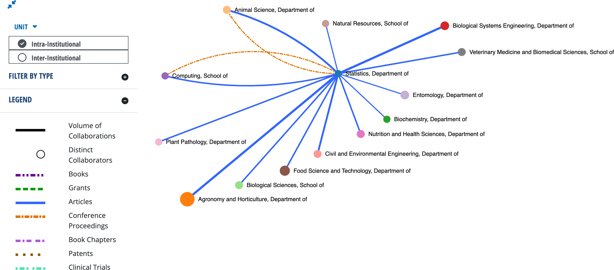
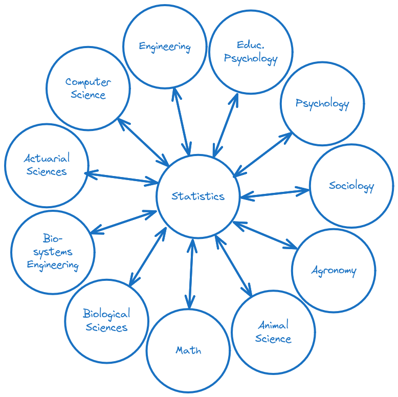

Statistics: An Essential Department for a Modern R1 University
1 Introduction
On September 11, 2025, the Statistics Department was informed that it had been proposed for elimination under the Chancellor’s budget reduction proposal.
When the process is invoked, the Chancellor will provide a framework document that describes the issue(s), including a rationale for the proposed reduction(s), the scope of the reduction/reallocation, and a desired timeline for completing the review process and implementing the changes. The document will be made available to the Chancellor’s Executive Leadership Team and the following shared governance partners: the Academic Planning Committee (APC), the deans, the Executive Committee of the UNL Faculty Senate, appropriate representatives of the Staff Senate, and appropriate representatives of the Association of Students of the University of Nebraska (ASUN).
The rationale for the proposed reductions provided in the budget reduction plan is as follows:
The proposed plan would eliminate a standalone Department of Statistics offering BS, MS, and PhD degrees and moves the university toward a distributed model that leverages expertise embedded across IANR, UNL and the NU system. The plan proposes to strategically deploy a portion of the state-appropriated funds to continue to offer selected undergraduate and graduate courses and provide coordinated statistical consulting. Budget reductions would be achieved through the elimination of positions (12 FTE).
That is, the only rationale offered is that the Chancellor proposes to move towards a distributed model that “leverages expertise embedded across IANR, UNL, and the NU system”. The distributed model has been tried before at UNL, within both IANR and the College of Arts and Sciences, and the end result was the creation of a stand-alone statistics department (though only after nearly every other possible model was proposed and attempted).
Section 2 discusses statistics within the University of Nebraska System, with a focus on the University of Nebraska – Lincoln. Section 2.1 provides a brief history of the Statistics Department at UNL and its associated graduate and undergraduate programs, along with the rationale used to motivate past changes to the department structure. This historical data is used to assess the plan to move toward a distributed model of embedding statisticians within other departments on campus.
Section 2.2 examines the role of the Statistics Department on campus, outlining its interactions with the teaching, research, and extension missions within the university. Section 2.3 examines other clusters of statistical expertise within the University of Nebraska system, including related departments at UNL, Biostatistics at UNMC and Mathematics departments at UNO and UNK. These additional clusters of statistical knowledge are critically assessed to determine whether any other unit or the combination of all other units have the capacity to replace the functions of the Statistics department without hiring additional FTEs and reducing the savings from the proposed elimination of the department.
Section 3 examines the metrics used to evaluate the performance of the department and makes the case that the reliance on these metrics demonstrates the importance of accounting for random variation and contextual information when interpreting data – that is, that the Statistics department is a necessary component of decision making across the university.
Section 4 discusses the presence of statistics departments within the AAU, Big Ten, R1, and land-grant classifications, examining the viability of a distributed model based on data from peer institutions.
Section 5 examines the programs housed within the Statistics department as well as important contributions made by the department to other programs, and evaluates the impact of closing the department on the university and the state.
Section 7 provides an alternative plan to situate the Statistics department within the university in a way that will best position UNL to rejoin the AAU and serve the state of Nebraska by strengthening research, teaching, and extension missions of the university.
Throughout this report, additional resources and references are directly linked (rather than providing a bibliography and formal citations) to ensure that APC has the necessary information immediately available.
2 The UNL Statistics Department
2.1 History of the Department
- 1957 - Statistics Laboratory founded at UNL under Dr. Charles Gardner, funded by the Agricultural Experiment Station to provide design, analysis, and data processing services to researchers.
1968 - Dr. Wilfred Schutz becomes head of the UNL Statistics Laboratory. At this point, the Statistics laboratory consists of Dr. Schutz, one additional faculty member, a data processing programmer, a computer operator, data entry personnel, and a secretary. Faculty members hold academic appointments in Agronomy.
1972 - Statistics courses are transferred to the Statistics laboratory from Agronomy. Several new faculty are hired due to growing demand for consulting services and additional courses.
Early 1970s - A Ph.D. program in statistics is discussed involving faculty from Math, Biometrics, Educational Psychology, and other departments (1993 Biometry Department Self-Study, page 30).
1978 - The Statistics Laboratory is renamed the Biometrics and Information Systems Center.
While the [Mathematics and Statistics] department gave me a fine education that served as the basis for the remainder of my career, statistics at UNL struggled to gain respect in both the academic and professional communities during its combination with mathematics. The decision to finally separate the two and form the Department of Statistics on the East Campus was a major win for statistics in Nebraska, and has led to enormous benefits. – Brad Carlin, UNL Math & Statistics alumni, former faculty at CMU and University of Minnesota Statistics, President of Biostatistical Consulting
1985 - A committee is formed to study the feasibility of combining the Statistics portion of the Mathematics Department and the Biometrics Department into a Department of Statistics (1993 Biometry Department Self-Study, page 31).
1987 - The Biometrics and Information Systems Center is divided into the Biometrics Center and IANR Computing, as recommended in 1985 self-study (1993 Biometry Department Self-Study, page 31).
1988 - The Division of Statistics is established as a subgroup within the Department of Mathematics and Statistics (2001 Mathematics & Statistics Department Self-Study)
1989 - The Department of Biometry is established from the Biometrics Center. Faculty from the Biometrics Center hold academic appointments in the Biometry department. (1993 Biometry Self-Study, page 9)
1990 - The Board of Regents approves an MS program in Biometry (1993 Biometry Self-Study, page 20).
1993 - The Mathematics APR Report recommends creation of a separate department of statistics (2001 Mathematics & Statistics APR Self-Study, pg 147)
2000 - A largely-autonomous Division of Statistics is created within the Department of Mathematics and Statistics with a focus area in survey sampling to support the Gallup Research Center. Some faculty transfer tenure homes into the department from Biometry and Sociology (2001 Mathematics & Statistics APR Self-Study, pg 14).
2003 - The Statistics Department is founded from the Department of Biometry (IANR) and the Statistics faculty from the Department of Mathematics and Statistics (2005 Statistics APR, pg 3)
2003 - A Statistics PhD program is created within the newly-formed Statistics Department.
2005 - APR Team recommends better integration and outreach to city campus and assessment of service teaching needs in other departments.
2013 - APR Team recommends reducing graduate program enrollment and creation of an undergraduate and 3+2 BS+MS program.
July 1, 2018 - The Statistics department fully separates from the College of Arts and Sciences and is 100% supported by the Institute of Agriculture and Natural Resources.
Fall 2019 - The Statistics department begins to design an undergraduate major in Statistics and Data Analytics at the request of CASNR Dean Tiffany Heng-Moss and in response to the recommendations from the 2013 APR.
2021 - APR team recommends increasing the number of tenure-track faculty to 20, hiring several teaching faculty to increase instructional efficiency and capacity, and adding departmental administrators to ensure program success.
Fall 2021 - Statistics and Data Analytics major approved by the Board of Regents
June 2022 - Data Science Major approved by Board of Regents with programs in CASNR, CAS, and Engineering
Fall 2022 - First Statistics and Data Analytics freshman cohort begins classes
Spring 2026 - First Statistics and Data Analytics cohort expected to graduate
2.2 The Role of a Statistics Department
A statistics department provides a number of services within the campus ecosystem apart from its own programs (which often exist to provide these services efficiently, as demonstrated in the 1993 Biometry Self-Study report). Statistics is an essential component of undergraduate quantitative literacy; over 20% of UNL undergraduates take Stat 218 to fulfill their Ace 3 requirements. In addition, Statistics supports additional quantitative coursework for other departments: Stat 318 and 380, as well as Stat 462 and Stat 463, which are an essential component of the Actuarial Sciences program. At the graduate level, the department provides additional critical training in statistical methods (Stat 801, 802) and in computing and the use of software packages for data analysis and visualization (Stat 850). These courses facilitate research across the university, in a way that is difficult to explicitly measure: by training graduate researchers in other disciplines, we facilitate high quality research in those disciplines. In addition to introductory courses, however, graduate students in other departments often need additional course work in experimental design and specific areas of statistical methodology, such as Bayesian statistics or statistical genetics. Without a centralized statistics department and the expertise of statistics faculty, each department must solve the problem of providing this coursework separately.
It is more efficient to offer courses in linear mixed models under a statistics prefix than to teach separate courses for Agronomy, Animal Science, Engineering, Psychology, and Sociology across five departments with five instructors. While it may be necessary to offer two courses (one which accommodates the lack of linear algebra or calculus prerequisite work), this is still a substantial savings over offering five separate courses. One failing of a distributed model where statisticians are embedded within each department is that it results in duplication of effort across departments, and if departments cannot hire someone with statistical expertise AND domain expertise, then it becomes difficult for that department to meet the needs of both students and faculty.
The training my own students receive from Statistics – from coursework, from collaborators, and from Statistics faculty on their thesis and dissertation committees – is essential to our ability to win and execute upon large federal research awards. Our institute’s capacity to train students whose expertise bridges quantitative techniques and in the field understanding of crop systems is why I receive e-mails from Corteva, Syngenta, and Bayer asking when my next lab’s next PhDs will be graduating.
– James Schnable, Letter to APC
On the research side, a statistics department should have collaborations with many scientific departments across campus, assisting with the development of new methodology as well as consulting on the appropriate established methodology to use. This dual collaboration and consulting function of a statistics department is critical for ensuring that the scientific results published by researchers are valid and for accelerating progress within other fields. A major research university without a statistics department is as difficult to imagine as a university known for its engineering programs that doesn’t have a mathematics department to assist with teaching calculus and differential equations or a physics department to teach statics and mechanics.
Statistics is the midwife to all other departments. UNL has a strong agricultural mission and a proud track record in agronomy. So does statistics. My field was started by Sir Ronald Fisher, who worked to analyze agricultural data at the Rothamsted Experimental Station before moving on to University College London and eventually the University of Cambridge. The work that Fisher did laid the mathematical foundation for continual improvement of yields. His co-founding of statistical genetics has been the basis for nearly all improvement in agriculture over the last 100 years (aside from the Haber-Bosch process, which gave us plentiful fertilizer). But statistics doesn’t just feed agronomy. It provided the necessary confirmation of the Higgs boson in physics. It undergirds the risk analyses that drive medical therapies, business decisions, insurance, and the amelioration of climate change. English professors use latent Dirichlet allocation to identify themes in literature. Philosophy faculty study the implications of Bayes’ Rule for rationality and coherence. Chemists, entomologists and historians all employ statistics on a regular basis, either on their own or through collaboration with research statisticians. – David Banks, Duke University Statistics Department, ASA Fellow, IMS Fellow, AAAS Fellow
While biostatistics departments are generally composed of individuals who assist medical schools with clinical trials, survival analyses, and causal inference, statistics departments typically have experts in experimental design relevant to important programs across campus: at UNL, that would include agricultural field experiments, population genetics for plants and animals, engineering factorial experiments and quality control, survey sampling to support social science, statistical computing and simulation, Bayesian methodology, and operations research. A centralized statistics department that is set up to collaborate with quantitative disciplines on campus is more efficient than a distributed set of statisticians scattered across many different departments, because it is easier to find the statistician with the right expertise when they are collocated. Under a distributed model, someone might have to search directory information within 12-15 departments1, and it is likely that they may not find the right person in any case.
Decentralized statisticians also exist in a service role, publishing research papers that may develop their disciplines but which often do not make contributions to the discipline of statistics. As an example, the charts and graphs used to show the metrics of each UNL department were created with ggplot2, plotly and knitr, all tools developed at Iowa State under the supervision of Dr. Heike Hofmann, who is now in the UNL Statistics department. It is hard to imagine such tools being developed under a distributed model: they are the product of statistics research, and they are now widely used across quantitative disciplines. Similarly, tools like rmarkdown and quarto (which were used to assemble the charts into a document that was shared across the university) are direct descendants of research products of the Iowa State Statistics department in the same era, and they are now gold-standard tools for reproducible research across the sciences, in addition to making reporting easier within e.g. business and administrative units. Within UNL, these tools are used in agronomy, agricultural economics, biosystems engineering, the School of Natural Resources, journalism, and psychology2. Collaboration between statisticians produces research that makes science better and more efficient for everyone, but this is difficult or impossible to prioritize under a distributed or service model where embedded statisticians are evaluated based on discipline-specific contributions.
A centralized Statistics Department provides essential consulting, collaboration, and training for research across all colleges. Dispersing faculty into a “distributed model” weakens this role and undermines interdisciplinary strength. – Brani Vidakovic, H.O. Hartley Chair and Department Head, Department of Statistics, Texas A&M University
However, we can also evaluate the purported efficiency of a distributed model by examining the resources currently available across the NU system in Statistics. If there is excess capacity of faculty with statistical expertise outside the Statistics department, then perhaps the inefficiencies of workin in the distributed model would be countered by the savings from eliminating the department. However, this is not the case, as demonstrated in the next section.
2.3 NU System Statistics Expertise
There are several units within UNL that maintain some statistical expertise in-house, in addition to programs in Biostatistics at UNMC and Statistics and Data Science at UNO.
At UNL, in addition to the Statistics department, some departments have overlap with Statistics in coursework and/or research:
- the Quantitative, Qualitative, and Psychometrics (QQPM) department, which focuses on educational statistics and measurement. None of the faculty have Ph.D.s in Statistics; they are distributed between QQPM, Educational Psychology, and Psychology programs. However, they clearly have expertise in some aspects of statistics and measurement.
- the Sociology department has two faculty (Kristen Olson, Jolene Smyth) who specialize in survey research methods. Their Ph.D.s are in Survey Methodology and Sociology, but they do survey research and have expertise that isn’t currently available within the Statistics department.
- the Economics department. Econometrics has some overlap with Statistics. There are three faculty (Yifan Gong, Christopher Mann, Federico Zincenko) who mention Econometrics as a research area within this department.
- the Agricultural Economics department. There is some overlap with statistics in discipline, but it is difficult to identify any specific faculty who might have the expertise and interest to do Statistics work. None of the faculty appear to have Ph.D.s in Statistics.
- the Actuarial Science program. Three tenured or tenure-track faculty (Colin Ramsay, Mostafa Mashayekhi, Graham Liu) affiliated with Actuarial Science have Ph.D.s in Statistics or Actuarial Science.
- the Supply Chain Management & Analytics program. None of the faculty have Ph.D.s in Statistics, but seven tenured or tenure-track faculty have degrees in business analytics, operations management, or supply chain management. These degrees are not comparable to statistics in terms of theoretical training that would support development of new statistical methodology but might suffice to cover some of the coursework currently offered in the Statistics department.
Section 3 discusses the ways that the Statistics department interacts with other portions of campus. Faculty within the College of Business (Econometrics, Actuarial Science, Supply Chain Management & Analytics) represent perhaps the closest group outside of the Statistics department within UNL, but none have degrees in Statistics, and while some of the courses taught in the College of Business may touch on topics such as forecasting, simulation, and modeling, the faculty within the college have specialized to apply these techniques to business and finance, and it seems unlikely that they have extra capacity.
Ultimately, however, there are clearly insufficient FTEs available at UNL in statistics-adjacent fields that could reasonably take over the teaching, collaboration, consulting, and research functions which are fulfilled by the Department of Statistics, particularly when the existing demands on those FTEs are considered.
As a tenured Professor and Associate Chair of the Statistics Department at Cornell University, I’ve seen firsthand that the belief that data science programs can replace the foundational role of statistics departments is not just misguided, it’s fundamentally flawed. While data science is a valuable and growing field, it is built upon the theoretical and methodological foundations developed within statistics. Data science programs rely on statistics departments for core instruction in probability, inference, modeling, and experimental design. Without a dedicated statistics faculty, data science curricula risk becoming superficial, lacking the depth and rigor necessary for high-quality research and decision-making. Moreover, statistics departments are essential for advancing the theoretical underpinnings of data science itself, ensuring that innovation in machine learning, causal inference, risk assessment, and uncertainty quantification is grounded in sound methodology. – David Matterson, Director, National Institute of Statistical Sciences
The Biostatistics department at UNMC has sixteen faculty members, and of these, fourteen have Ph.D.s in Statistics rather than Biostatistics; the remaining individuals received their Ph.D.s from UNMC in Biostatistics and Biomedical Informatics. Moreover, five of the sixteen tenured or tenure-track faculty received their Ph.D. from the Statistics department at UNL (see Table 5 for a full list), an indication that the Statistics department at UNL actually serves to enrich Biostats at UNMC, rather than being a redundancy within the UN system. While Biostatisticians at UNMC do valuable work that contributes to research methodology in statistics, many of the papers listed in different research areas were published before the faculty member joined UNMC - that is, the broader methodological papers were written as part of their doctoral work in Statistics.
Biostatisticians apply statistical methods to medicine, and must cultivate a specific set of skills for collaborating with doctors that are distinct from collaboration skills required for working with other academic disciplines. A Biostatistics department is not sufficient to serve as the center of a statistical practice that supports the many non-medical disciplines that are important to the state of Nebraska: agriculture, animal science, population genetics (animal and plant), engineering, social sciences, education, business, physics, chemistry, and biology. Section 4 includes a discussion of peer R1 and AAU institutions, many of whom maintain both statistics and biostatistics departments.
There is also a Mathematics department at UNO which offers statistics coursework and a data science program. Of the 18 tenured and tenure-track faculty in this department, there are three with statistics Ph.D.s (see Table 6 for a full list). UNO is not an R1 university, and faculty there have a much heavier teaching load than faculty at UNL; consequently, it stands to reason that the UNO Mathematics department would not be able to significantly alleviate the statistics need across the university that would be created through the proposed elimination of the Statistics department in favor of a distributed model.
The University of Nebraska - Kearney has a mathematics and statistics department which does not appear to contain any statisticians, according to the research interests listed on the faculty web pages. Moreover, as UNK does not have a statistics program at any level, it stands to reason that UNK Mathematics & Statistics faculty will not be able to help UNL with its proposal to use a distributed model for the university’s statistics instruction, collaboration, consulting, and research needs.
For UNL to “unilaterally disarm” and drop statistical thinking from its teaching, research, and service missions would do an enormous disservice to the state, and ultimately be counterproductive for UNL. – Brad Carlin, UNL Math & Statistics alumni, former faculty at CMU and University of Minnesota Statistics, President of Biostatistical Consulting
3 Metrics
We begin this section by acknowledging that it is hard to assemble fully correct data that correctly represents our department, and that the task to assemble all of the (correct) data for all departments and stand-alone programs on campus is indeed a difficult one. We teach several courses in our department which describe how to build a data pipeline, from collection to cleaning to visualization, and we believe having a resource on campus which can consult on these tasks is fundamentally important to both the research and administration of the university. Our students are taught to consider the impact of the decisions which are made during assembly of a data pipeline when conducting the resulting statistical analysis and whether numbers are comparable and not an instance of “apples” to “oranges”; it is this step that is most obviously missing from the metrics provided to APC to justify the budget reduction plan. The department would be more than happy to assist with future projects evaluating the performance of units across campus; integrating the methodology and data into a course as a service learning opportunity would have very real benefits. This data is both extremely interesting and provides an excellent demonstration of the importance of a variety of concepts from data documentation to reproducibility and the different varieties of messy data which often appear in real-world analyses.
However, we would be remiss if we did not note that administration has access to resources which have not been made available to departments seeking to understand how the relevant metrics were assembled. Ultimately, these issues are not particularly relevant to the importance of the Statistics department within the University of Nebraska ecosystem, and so we will defer discussion of the most egregious issues to Section 8.23.
3.1 Research
The Scholarly Research Index (SRI) is a measure developed by Academic Analytics to evaluate the research performance of individuals and entities with respect to (1) scholarly products, such as conference proceedings, research articles, books, and book chapters, (2) recognition from the community in form of citations and awards, and (3) federal sponsoring of research projects measured by the number of grants and their amounts.
Different disciplines operate differently. The weighting of each of these measures is discipline specific (based on a factor analysis by Academic Analytics); the weights for statistics are shown in Table 1.
| Category | Weight |
|---|---|
| Articles | 18 |
| Awards | 19 |
| Books | 5 |
| Chapters | 5 |
| Citations | 20 |
| Conf Procs | 11 |
| Grant $ | 22 |
| Patents | 0 |
| Trials | 0 |
| Total | 100 |
UNL Statistics has (based on data through December 2023) an SRI of 0.4 based on all R1 and R2 institutions tracked by Academic Analytics. Academic Analytics also offers the ability to compute an SRI based on a custom comparison group; using only AAU universities, the department’s custom SRI is -0.1.
Importantly, however, because SRI is the result of discipline-specific weights, it cannot be used as a faithful performance measure across disciplines directly. Each discipline has a different distributional parameters (mean and standard deviation) for the SRI values. Comparing across disciplines without accounting for these distributional differences is not only incorrect but extremely misleading. Academic Analytics stresses the importance of using the SRI (and any other metric) only for comparisons within taxonomy peers. This is violated two-fold with the metrics used in the performance across units: departments are not at the same taxonomy level as stand-alone programs; and ‘peers’ are defined discipline specific. The document further elaborates the method for aggregating faculty within units. The key step here is to “Calculate each faculty member’s rank within the taxonomy, for each metric”. The discipline specific SRI rank is directly related to the SRI percentile.
Figure 1 shows the SRI percentile for each department on campus when compared to other R1 and R2 departments. While several departments which have been proposed to be eliminated are indeed performing below the median, many departments are also above-average in their respective fields. We teach statistics students to carefully consider the appropriate comparison population and the real-world meaning of the numbers they use in analyses; it is important that UNL’s administration does the same. After all, it is less important that Statistics publishes the same amount of papers or generates the same amount of grant funding as Physics, because grants in those fields cover different things (statisticians don’t need particle accelerators very frequently) and publication norms are also different. What matters is whether departments are doing good work as measured by comparisons to the appropriate peers, both actual and aspirational.
UNL’s ranking indicates that the Statistics department’s research productivity and recognition is better than 75% of other R1 and R2 institutions. Comparing the Statistics department’s SRI to other Statistics departments (Figure 2), it is clear that the UNL Statistics department performs better than several well-respected AAU and Big Ten institutions. If the Statistics department is eliminated, it is likely to hurt UNL’s case to be readmitted to the AAU, even though our SRI is below the mean for AAU institutions, because we are performing within the range expected of statistics departments at AAU institutions.
[Y]our statistics department is punching above its weight. Bertrand and Jennifer Clarke have written the bible on predictive statistics. When Covid-19 was at its height, Chris Bilder was advising the state of Nebraska on group testing, and his methodology was used. Bhaskar Bhattacharya has published seminal work in the Annals of Statistics, which is Holy Grail of mathematical statistics. Erin Blankenship is one of the world leaders in agricultural statistics. Heike Hofmann was recently hired from Iowa State, and she is a Fellow of the American Statistical Association, and there are several others in your department who outshine even her. – David Banks, Duke University Statistics Department, ASA Fellow, IMS Fellow, AAAS Fellow

What is remarkable is that UNL does all of this with a department that is very small relative to its peers, as shown in Figure 3. It should be noted that UNL offers a full complement of statistics degrees and supports the data science program with this small faculty (13 tenure-track professors and a 30% FTE teaching professor of practice) while keeping research productivity high.

A central development in scientific publishing and scientific procedure over the last century has been the onset of data rich studies and the deployment of concepts and tools involving rigorous statistical methodology for data analysis. These concepts and tools have largely been invented, carried out, promoted, and taught in statistics departments nationwide and worldwide. Today there are hundreds of thousands of papers yearly in clinical medicine and computational science that publish their results and clinch their arguments with statistical tests and procedures.
Although rigorous methods are demanding, difficult and in certain senses forbidding, they bring great benefits in terms of research efficiency. Instead of inconclusive research, in which we have no confidence, we get actual conclusions in which we have confidence. Still, some non-statisticians who have not been trained in these concepts and methods may not be aware of the threats to scientific validity which arise if the rigor is allowed to slip away. In fact, in the last decade we have become able to peruse the entire body of scientific literature as a dataset, and to recognize the uneven quality and rigor of studies, as well as the proliferation of poor studies, which contaminate the corpus and now begin to undermine public confidence and funding. – David Donoho, Professor of Statistics, Stanford University
3.2 Teaching
I strongly urge the Academic Planning Committee to … recognize that statistical education is not a “service” add-on but a foundational element in many academic disciplines, and a strategic asset for UNL and the State. – Professor Aemal Khattack, Civil and Electrical Engineering, UNL. Director, Mid-American Transportation Center
The Statistics department has high-SCH service courses, which the budget proposal recognizes and plans to continue. However, it is not clear how these courses will be taught - currently, they are taught by a combination of graduate students with training in statistics pedagogy and tenure-track faculty. The 1993 Biometry APR Self Study (pg 29) documented the challenges of appropriately staffing e.g. 801 and 802 labs when motivating their desire to start a Ph.D. program:
Enhanced teaching. Biometry has a number of classes with labs. We are constantly struggling to place graduate students with an appropriate background as lab instructors. For example, our M.S. students are required to take BIOM 802 (Experimental Design), which has a lab. They cannot teach the lab until they have had the course themselves… In general, Ph.D. level graduate students can make a variety of contributions to the teaching program that faculty do not have the time to make and M.S. students lack the background to make.
Currently, the Statistics department offers approximately 15 sections of Stat 218 (8 in fall, 7 in spring), in addition to 6 sections of Stat 380, and two sections of 801 (with 2 sections of lab each) and 802. Stat 870 is offered less frequently, so we will exclude it from this analysis. The courses identified to be kept require 25 sections across 4 preps; we estimate that this would require at least 3 professors of practice to teach (assuming a 4-4 load) which are not accounted for by the current budget reduction plan. These FTEs would need to be subtracted from the savings listed, yielding only 9 FTE savings for cutting four programs (BS in Statistics, BS in Data Science from CASNR, MS in Statistics, and Ph.D. in Statistics). In addition, Stat 218, 380, 801, and 802 regularly benefit from statistical research (for instance, an experiential learning activity in Stat 218 is used to introduce data visualization topics to students), and these benefits would disappear if all statistics coursework was offered by teaching-only professors of practice. We use professors of practice for this comparison rather than adjuncts both because it seems unlikely that 25 courses could be assigned to adjuncts with statistical training, given that most people with graduate degrees in Statistics can make more freelancing as data scientists than they would be compensated for teaching courses. Certainly, it seems likely that the FTEs which are being eliminated will not be available to teach courses at adjunct rates.
The calculations for how many PoPs would be required to teach current Statistics courses that drive revenue generation for the department does not include courses not identified by IANR, such as Stat 462 and Stat 463, which are required for the Actuarial Science degree in Business and the Actuarial Science Mathematics concentration. Two additional Stat 300/400 level courses are required for the Mathematics, Statistics, and Data Science focus area within the Math department beyond Stat 380. The Digital Agriculture minor also requires Stat 151 and 251, computing courses developed for the Statistics undergraduate major. The Agricultural Economics Ph.D. requires Stat 882, and the Finance Ph.D. requires 9 hours of graduate Statistics coursework (it is quite possible that Stat 882 and 883 would be preferable to 801 and 802 for Finance majors). This analysis does not consider the fate of the Data Science programs in CAS and COE, which would lose the Statistics focus area that is primarily made up of courses designed for the Statistics and Data Analytics major and the Statistics minor. In order to support these additional courses, an additional professor of practice would likely be required, reducing the FTE savings from eliminating the department to 8.
The department’s teaching metrics are also not representative of recent changes we have made in order to be more efficient. We have recently increased class sizes for Stat 218, but have not been able to increase section sizes beyond approximately 80 students per section due to a lack of availability for large lecture halls. In past years, Stat 218 sections were more often 30 or 45 students each – we have made these changes to increase instructional efficiency as a result of the initial metrics, but of course none of these changes have been reflected in the numbers because data after 2024 is not included. Similarly, we began offering Stat 801 and 802 online in order to better support outstate students in various IANR programs, but this new modality has not been available for long enough to change the enrollment metrics. The department has been consistently working to increase instructional efficiency, even as we roll out a new undergraduate curriculum without additional FTE to support that program, however, it takes time to move our courses to larger city campus classrooms because of the relative lack of large classrooms on East campus, and ultimately there is a limit to the capacity of these classrooms that provides an upper limit on efficiency increases.
Over the course of my education, I studied at multiple universities, but UNL was different. The Statistics Department stood out for its supportive faculty who invested in my growth as a researcher and professional. In particular, my advisor, Prof. Ghosh, provided mentorship and encouragement that shaped my life in ways no other institution did. I also want to acknowledge the immense support I received from UNL during the COVID-19 pandemic. That sense of care and community left a lasting impression on me and made me proud to be part of UNL. – Ramesh Aravind, Ph.D., UNL Statistics. Data Scientist, Travelers Insurance.
Current students in other disciplines recognize the importance of the department to both their education and their research.
As a PhD student in another department, I am disheartened by the committee’s recommendation to eliminate the Department of Statistics and I urge the committee to reconsider. The department plays an integral role in graduate-level education across disciplines. Elimination of the department means limiting enrollment options for students seeking to learn from statistics experts, while placing undue strain on the faculty who teach related coursework in applied disciplines. Further, the Department of Statistics actively supports the research interests of the university as a whole through direct instruction, extension, outreach, and consulting. For me, personally, the resources and support offered by the department have been indispensable as I work toward becoming an independent researcher in my field who is sufficiently versed in statistical analysis methods to conduct high-quality investigations. My work would not be as analytically rigorous without the guidance and teaching provided by the department, and I am certain this is true for other graduate students and faculty alike. UNL’s research activity, ability to attain grant funding via a variety of mechanisms, graduate student recruitment, and graduate level education standards will be dramatically impacted if the committee chooses to eliminate the Department of Statistics. – Caitlin Cloud, Doctoral Student, Sensorimotor Integration for Swallowing and Communication Laboratory, Department of Special Education and Communication Disorders
3.3 Consulting
In 1957, the seeds of the Statistics Department were planted with the founding of the Statistical Laboratory, which would provide statistical computing and consulting services to IANR. The consulting mission of the laboratory motivated the creation of the MS program in Biometry and the Ph.D. program in Statistics so that the department could meet more of the demand for statistical consultation and assistance with experimental design and statistical computing tasks.
…advanced graduate students can do routine statistical consulting on their own. This improves everybody’s access to statistical consulting and frees the faculty to concentrate on more difficult consulting problems. In Spring semester, 1993, Biometry instituted a “Help Desk” staffed by a graduate student. The response has been very good; she has been very busy with a variety of problems. - 1993 Biometry APR Self-Study, pg 29
It is important to note that even in 1993, it was clear that the 8 tenured or tenure-track faculty in Biometry could not meet the demand within IANR for statistical consulting.
Yet the demand for statistical consulting and collaborative research is extensive at IANR. Any compromise in the quality of service provided by Biometry would translate as an immediate loss in the quality and quantity of research possible at IANR. - 1993 Biometry APR Self-Study, pg 34
The current proposal maintains 1 FTE of the current 13 FTE in the Statistics department, which is well below even 1957 levels of funding and support.
| Department | 2020 | 2021 | 2022 | 2023 | 2024 | 2025 |
|---|---|---|---|---|---|---|
| Agricultural Economics | 1 | 1 | 2 | 2 | 1 | 2 |
| Agricultural Leadership, Education and Communication | 1 | 1 | 1 | 2 | 2 | |
| Agronomy and Horticulture | 18 | 33 | 31 | 19 | 18 | 13 |
| Animal Science | 11 | 7 | 18 | 13 | 12 | 17 |
| Athletics | 1 | |||||
| Biochemistry | 2 | 1 | 1 | |||
| Biological Systems Engineering | 2 | 8 | 6 | 13 | 6 | 2 |
| Biology | 1 | 1 | ||||
| Biotechnology | 3 | |||||
| Birth Outcomes and Water Research | 3 | |||||
| CAS | 1 | 1 | ||||
| CEHS | 1 | |||||
| CYAF | 1 | |||||
| Chemistry | 2 | |||||
| Civil and Environmental Engineering | 1 | 5 | 3 | 1 | ||
| Communication Studies | 1 | 2 | 1 | |||
| Computer Science and Engineering | 2 | 1 | 1 | |||
| Criminology and Criminal Justice | 1 | |||||
| Dental Hygiene | 24 | 19 | 18 | 15 | 15 | 14 |
| Dept. of Communication, UNK | 1 | |||||
| EDPS | 1 | 2 | 1 | |||
| Earth & Atmospheric Sciences | 3 | 1 | 2 | |||
| Education | 1 | |||||
| English | 1 | |||||
| Entomology | 14 | 27 | 18 | 16 | 8 | 6 |
| Environmental and Sustainability Studies | 3 | 3 | 1 | 1 | ||
| Food Science and Technology | 19 | 14 | 19 | 18 | 16 | 9 |
| Glenn Korff School of Music | 3 | 1 | 1 | 1 | ||
| Growth & Development | 2 | 1 | ||||
| Marketing | 1 | |||||
| Mathematics | 4 | 1 | ||||
| Mechanical | 1 | 3 | 1 | |||
| Music - Vocal Pedagogy | 1 | |||||
| National Drought Mitigation Center | 1 | |||||
| NeDNR - Water Planning Division | 1 | |||||
| Nebraska Forest Service | 1 | |||||
| Need to convert SPS file into dta, Stata file. | 1 | |||||
| Neurocarrus | 1 | |||||
| Nutrition and Health Sciences | 1 | 1 | ||||
| Office of Academic and Student Affairs | 1 | |||||
| Office of Research | 1 | |||||
| Oral Radiology | 1 | |||||
| Other | 1 | |||||
| Panhandle Research and Extension Center | 1 | 1 | ||||
| Philosophy | 1 | |||||
| Physics | 1 | |||||
| Plant Pathology | 2 | 2 | 4 | 7 | 2 | 2 |
| Political Science | 1 | |||||
| Psychology | 1 | 1 | ||||
| Public Policy Center | 1 | |||||
| SGIS-Anthropology | 1 | |||||
| SVBMS | 1 | 4 | 5 | 1 | 2 | 3 |
| School of Biological Sciences | 1 | 5 | 1 | 1 | 2 | |
| School of Natural Resources | 9 | 7 | 6 | 18 | 5 | 8 |
| Sociology | 2 | |||||
| Southwest Fire and Rescue | 1 | |||||
| Statistics | 1 | |||||
| TLTE | 1 | 1 | ||||
| Testing | 3 | |||||
| Textile Science | 1 | |||||
| UNMC | 1 | 4 | 7 | 3 | 1 | 3 |
| University Libraries | 1 | 1 | 2 | 1 | ||
| of Testing | 1 | |||||
| stat testing | 1 |
As Table 2 shows, the SC3L handles a large number of projects over the course of a single year. Many of these projects are graduate research in other departments, and result in publications which only sometimes include the SC3L consultant and only rarely include any Statistics faculty. These contributions to the research activity across the university and system are simply not counted in the metrics, as graduate student papers are not counted in the department’s metrics.
Moreover, Kathy Hanford, the head of the SC3L until her retirement in 2023, had a Professor of Practice position, which means her research outputs are not counted in the department’s contributions, both because she was not in a tenure-track position, and because she retired in December 2023 and was thus not in the department when the data were assembled.
Currently, the SC3L employs five graduate students for 20 hours a week each, though they generally work on SC3L projects more than the 20 hours/week required by their funding. There is no way that the single FTE dedicated to the SC3L under the current budget can manage this workload. In addition, under new rules imposed by IANR, this 100 hours per week (plus the SC3L director’s time) is devoted only to IANR projects. The demand for consulting services in other colleges and units is surely much higher! Section 7 discusses possible resolutions for the mismatch between IANR interests and the ability for all researchers at UNL to access statistical consulting services.
Historians have looked into the practice of statistical data analysis during that earlier era. For example, Stephen Stigler of University of Chicago has an excellent article called “The History of Statistics in 1933”. He showed that in those days there were earnest and hard-working data analysts who were not schooled in the kinds of patterns one might see in noisy data that had explainable causes recurring again and again from study to study. Instead, there was a great deal of wasted time and effort in those days, when people just didn’t understand what they were seeing. They either thought they were seeing something real that was only an artifact, or they were ignoring patterns and tendencies that were fundamental and very important but were overlooked through lack of the right tools or simple awareness. – David Donoho, Professor of Statistics, Stanford University
Without the graduate students supported by the SC3L, UNL risks publishing studies which are the product of faulty statistical analysis, or which employ sub-optimal experimental designs. This will slowly erode the reputation of other departments on campus, and will make UNL less competitive for federal funding. Ultimately, reducing the consulting resources on campus threatens the ability of UNL to maintain its status as a Big Ten, land-grant, AAU-aspiring R1 university.
3.4 Collaboration
The Statistics department at UNL is currently well connected with other entities across UNL, mostly units on East Campus. Figure 4 shows a network of collaborations as recorded by Academic Analytics.
What is missing from this view are any collaborations with members of the Statistics Department who were not included in Academic Analytics by an oversight of the UNL administration. Faculty (Hanford, Stanke, Clarke) might not have a research component in Statistics, but their professional practice in Statistics enables researchers across campus to do their research.

The number of grants might seem low, but only grants with a non-zero dollar contribution to a Statistics faculty member are included. The mission of the Statistics Department has been to first and foremost serve the institution. As such we have agreed to be involved in grants without being officially acknowledged by receiving a non-zero percentage of the incentive, and in some cases, we are not even formally listed on the grants. Statistics faculty are also often involved by advising joint students, which is not documented in any of the metrics, though presumably that data is available to administration.
It seems that the research done within the statistics department – that is, the research published in statistics journals, rather than domain journals – is no longer considered “in alignment” with IANR and possibly UNL strategic goals. If this is the case, IANR and UNL are making a horrible mistake, because there is not a clear divide between statistics research and domain-specific consulting. The two co-evolve, as Statistics research is often the product of domain specific questions. There is a cross-pollination effect whereby consulting projects raise statistics questions that are more abstract, leading to a split where the domain-level project is solved first and the more abstract problem is solved later and published in Statistics. Then, the formal methodology in the statistics literature can be applied to other domains with similar problems and slight variations. This admittedly complex process takes time to bear fruit.
Collaborations across units have suffered from the recent retirement of highly-collaborative faculty. The administration has (informally) expressed a wish to see more collaborations within the Statistics Department, and while we are cognizant of this, collaborations take time to build before any measurable outcomes (papers, grants, students) can be documented. All of the metrics used to analyze the department are lagging indicators – the work is done more than a year before the paper is officially published4 or the grant is submitted, and then there is another year or more before the product is officially documented by Academic Analytics.
UNL is large, and the East/City campus divide can make it difficult to find the right collaborators - while the UNL Statistics department has many people who are excellent in their niches, it can be hard for non-statisticians to determine which person has the right expertise for their project. It might be more effective for the administration to facilitate opportunities for new faculty to meet established researchers in other departments - “speed dating for statisticians?” to set up the right conditions for these interdisciplinary collaborations to grow and mature. Alternately, a Statistics department with resources and additional capacity might host these events ourselves.
With current staff and teaching commitments, any expansion of services is not reasonable. Any increase in one form of consulting or research activity will require either an increase in consulting resources or a reduction in some other activity. - 1993 Biometry APR Self-Study, pg 34
3.5 Economic Impact
Nebraska is a unique state in many ways, but it is not unique in the demand for statisticians, data scientists, and those with the quantitative skills necessary to build applications that support data-driven decision making across industries.
Many state, local, and private sector organizations rely on well-trained statisticians: in transportation engineering, public health, agriculture, environmental modeling, economics, technology, social policy, etc. Eliminating the department weakens the workforce. The removal of this program would damage UNL’s reputation: for research, for graduate education, for interdisciplinary collaboration. Stand-alone departments that anchor quantitative and analytical research are core to being a research university. – Professor Aemal Khattack, Civil and Electrical Engineering, UNL. Director, Mid-American Transportation Center
Hiring in statistics is robust in academia and in industry. The UNL statistics department helps meet the growing demand for data scientists and statisticians within Nebraska, but we were also surprised how many of our graduates work remotely and live in Nebraska, contributing to the local economy while working for large national companies. This serves a dual function that is important for the state – these students can live close to families and support aging parents while working high-paying jobs and paying state and local taxes accordingly.
From the student perspective, this department has been crucial to my academic growth, as well as that of my peers, both inside and outside the program. Before attending graduate school, I worked as a Business Intelligence Analyst in data analytics at Sandhills Global, one of Nebraska’s major employers of UNL graduates. I left that full-time role to pursue a Master’s in Statistics, seeking a stronger foundation in statistical theory and methods to prepare for a career as a Data Scientist on Sandhills’ Research & Development team. Even after only a year in the program, I returned to Sandhills as a Data Science intern last summer and was able to make meaningful contributions. My training in Experimental Design, Linear Models, and Bayesian Statistics directly supported improvements to the internal AI-powered chatbots in Sandhills’ Retrieval Augmented Generation pipeline. My coursework in Mathematical Statistics and Statistical Computing allowed me to build a Lead Quality Meter to classify sales leads as high, medium, or low quality, ultimately increasing sales and reducing time spent manually routing clients. Sandhills Global is just one of many examples of employers who have benefited from statistics graduates from UNL. Alumni from this department are working in key roles at First National Bank of Omaha, Mutual of Omaha, Hudl, Nelnet, and many other large companies, applying their statistical training in ways that strengthen Nebraska’s economy. Recruiting outside talent to Nebraska is already difficult; it is therefore imperative to prepare in-state graduates with formal, rigorous statistical training. Since UNL houses the only dedicated Statistics Department in the state, eliminating it would force future students to leave Nebraska to study statistics and would weaken the state’s ability to meet growing workforce demands in agriculture, healthcare, business, and technology. – Arian Alai, MS/Ph.D. student in Statistics
The demand for statistical training will only grow as AI becomes more prevalent, as AI is, fundamentally, a combination of linear models, trained on data. Statistics is a critical component of AI, and without statistical training, people risk misusing AI tools, with potentially disastrous consequences. It is critically important to Nebraska and also to UNL that we continue to train statisticians who can provide this expertise.
Furthermore, the decision to close a statistics department runs contrary to national and global academic trends. At a time when universities are expanding their quantitative programs to meet the explosive demand for data scientists and analysts, eliminating a strong and respected department is a shortsighted move. It is particularly important now, in the age of artificial intelligence, that students have a strong statistical foundation. Without it, they risk misusing AI tools for statistical analysis without truly understanding or being able to check the output, potentially leading to flawed research and even academic plagiarism. – Dr. Ladányi Márta, Professor, Hungarian University of Agriculture and Life Sciences, Institute of Mathematics and Basic Science
4 Peer Analysis
The University of Nebraska-Lincoln’s proposal to abolish its Department of Statistics and terminate all tenured and tenure-track faculty is a deeply alarming decision that threatens the integrity of a core STEM discipline. This move undermines the university’s mission as a comprehensive, research-intensive, land-grant institution and contradicts the principles of academic excellence and innovation. – David Matterson, Director, National Institute of Statistical Sciences
There is an incredible diversity of both names and structures for housing statisticians within units across R1 and AAU universities, as touched on by Len Stefanski, former chair of the NCSU Statistics Department (the oldest and largest department in the country).
That is why the news that UNL was considering abolishing Statistics came as such a shock. Especially, in light of the overwhelming and pervasive interest in Data Science, Data Analytics, and related areas. Statistics is The Science in Data Science. It is incomprehensible that any scientific organization would want to back away from Statistics at a time when so many are increasing their investment in Statistics. There are very few major universities that do not have departments of statistics or departments of mathematics and statistics (and the trend among the latter is to separate out statistics from mathematics as Wake Forest University has done very recently). Many major universities have both departments of statistics and departments of biostatistics. The presence of statistics departments at so many major universities is due to the fact that great research (in any discipline) is not possible without statistics. In addition to the impact of statistics on research of all types, the demand for students with degrees in Statistics (undergraduate and graduate) has never been stronger, and their career prospects have never been greater. – Leonard A. Stefanski, Professor, Department of Statistics, North Carolina State University
For the purposes of this analysis, there are two characteristics which seem to be particularly important:
- A group of statisticians located in the same department (whether that is called Statistics, Data Science, or Mathematics & Statistics), where
- The department offers programs in Statistics at the undergraduate or graduate level
We exclude from this “big tent” biostatistics departments, not because they don’t serve a similar role, but because many universities have both Statistics and Biostatistics departments5, and so we track Biostatistics as a separate (but closely related) discipline. Note that our approach differs from the Academic Analytics tracking of Statistics as a discipline, but the conclusions of this analysis are largely the same using either approach.
4.1 R1 Universities
Of the 186 R1 universities, only 1 does not have a stand-alone statistics, biostatistics, or data science department. If we exclude biostatistics, only 16 do not have a stand-alone statistics or data science department, and of these, 8 are medical schools which do not grant undergraduate degrees outside of the health sciences6.
Agencies such as NIH, NSF, USDA, and DOE expect a strong institutional presence in statistics when awarding large research grants. Eliminating the department will send a negative signal to funders, and the resulting shortfall in research funding will, over time, exceed the current budget savings.
– Brani Vidakovic, Chair, Texas A&M and former Program Director, National Science Foundation
4.2 Land Grant Universities
Every flagship university should have a strong and visible statistics department. Statistics is not only a standalone field but also a vital support system for nearly every discipline on campus. A dedicated department fosters innovation in theory and methodology, equips students with critical skills that are increasingly in demand across industries, and strengthens the university’s ability to contribute to research that addresses society’s most pressing challenges. Maintaining, supporting and further investing in a statistics department is a clear signal of a university’s commitment to excellence, interdisciplinary collaboration, and leadership in a data-driven world. – Alexander Aue, Professor of Statistics, Program Director, Interdisciplinary Major in Data Science, UC Davis
If we instead consider our 48 land-grant peers, all 48 have a stand-alone statistics or data science department, and 27 also have a biostatistics department. That is, UNL would be alone among land-grant institutions if the proposed elimination of the Statistics department goes through. Statistics departments are essential for state flagship land-grant universities that drive the economic progress of the state through research and innovation in both theoretical and applied fields. We support research in departments across campus and fundamentally enable the university to fulfill the land-grant mission that was so central to our institution’s founding.
Disbanding Statistics would immediately weaken UNL’s standing as a comprehensive, research‐intensive institution. It would jeopardize collaborations across colleges, with federal agencies, industry, and other universities, and risk signaling a retreat from UNL’s land-grant mission. – Thomas Lee, Distinguished Professor of Statistics, UC Davis
4.3 Big Ten Universities
Eliminating the department would not only discredit UNL’s national reputation but also dismantle a critical hub for collaboration, teaching, and discovery. Thirteen out of fourteen Big Ten universities maintain stand-alone statistics departments because they recognize the strategic importance of the discipline. As a proud statistics major from one of those institutions, I can personally attest to the transformative value of a dedicated statistics department in shaping my own education and career, and in fostering a culture of analytical rigor, interdisciplinary collaboration, and continuous innovation. UNL’s decision would set a dangerous precedent in which foundational academic units can be dismantled despite their centrality to institutional success and societal progress. – David Matterson, Director, National Institute of Statistical Sciences
We should note that Dr. Matterson’s statistics on Big Ten membership might be slightly out of date, but the conclusion is the same. Of the 18 Big Ten universities, only University of Oregon does not have a cluster of statisticians on campus, and they are actively hiring statisticians to fill a School of Data Science. One additional university (Indiana) has proposed its Statistics department for elimination; however, according to Academic Analytics data, its department seems to have only 7 faculty and has an SRI percentile of 38.2.
4.4 AAU Universities
If instead we compare to the 69 AAU universities, all 69 have a stand-alone statistics, biostatistics, or data science department and only 3 do not have a statistics or data science department7.
Faculty outside the department of Statistics recognize the essential function we serve and the threat to the University’s standing among its peers if the Statistics department is eliminated:
Every AAU member university and every Big Ten university maintains a Department of Statistics (or an equivalent stand-alone unit) as a core component of their research infrastructure. Eliminating ours would immediately place UNL at a disadvantage relative to our peers and signal a retreat from the standards of excellence required for AAU membership.
– David Hyten, Letter to APC
And this assessment is shared by the chairs of other Big Ten statistics departments:
Moreover, dissolving the Statistics Department will make it difficult, if not impossible, for UNL to achieve its goal of rejoining the Association of American Universities (AAU). – Big Ten Statistics Department Chairs
4.4.1 Public AAU Universities
The administration has defined the 40 public AAU universities to be their preferred comparison group. All 40 have a stand-alone statistics or data science department (excluding biostatistics), and 30 also have a biostatistics department. Thus, even if UNL and UNMC merge at some point in the future, we will be in good company among other public AAU institutions in having both a Statistics and Biostatistics department, as these serve different functions.
4.5 Conclusion
While it is often desirable to be unique in a field, eliminating the statistics department would be more akin to notoriety. Statistics expertise is essential to the function of a modern R1 land-grant institution, particularly in a state where there is not another competing R1 institution which might serve researchers at both schools. We fear that if the Statistics department is cut, UNL will soon lose not only any hope of rejoining the AAU, but may also find its R1 status threatened. The proposed elimination of the department has threatened UNL’s international reputation, but going through with that elimination would have dire consequences for the institution’s standing among its peers.
Statistics is the backbone of modern research across all fields, from agriculture and medicine to engineering and social sciences. The expertise provided by statisticians is essential for designing experiments, analyzing data, and interpreting results. Without a dedicated Statistics Department, UNL will lose its competitive edge in research and innovation, and a fall in research quality and rankings is inevitable. – Rob Hyndman, Monash University, Australia.
The Statistics department has assembled letters from a truly international array of scientists and statisticians, each expressing opposition and confusion as to the elimination of the Statistics department. Hungarian statisticians, Pakistani historians and statisticians, Australian professors, and a wide swath of very well known statisticians from AAU and R1 schools across the country. They cite many obvious arguments: the increased demand for statistics degrees and a workforce with data manipulation skills, the importance of statistics to a research university, and the important of statistical education across many undergraduate and graduate degree programs. Ultimately, the totality of these letters suggest that UNL will lose standing among its peers at land-grant universities and will damage the reputation which is so essential for regaining AAU status.
Statistics departments provide many services which are essential to modern research universities. At UNL, the statistics department also provides unique, valuable, and essential programs within the educational ecosystem of Nebraska. In addition, the department provides essential support for many other programs across the university. These contributions are discussed in Section 5.
5 Program Analysis
UNL has the vision to invest in statistics for decades, having started with its roots in Biometry and mathematics, and creating a Department of Statistics. The department is an invisible backbone on your campus with an impeccable impact. It not only does its own fundamental research in statistics and data science, but also has a significant impact on the research and discoveries across the campus and across Nebraska. It is the only department in all of Nebraska that offers doctoral degrees in Statistics (UNMC offers a PhD in Biostatistics). My sincere concern is the irreversible damage a decision to abolish your statistics department will have not only on your campus, but also in the state of Nebraska. I just wonder as a Dean (not just as a statistician) whether the university is, unfortunately, killing the goose that lays a golden egg. – Sastry Pantula, Dean, College of Natural Sciences, California State University
5.1 APC Criteria
The APC procedures specify criteria for the reduction or elimination of academic programs. We will address each set of criteria separately to both show that the criteria in support of reduction or elimination are not met and to show that the criteria indicating that elimination is inadvisable are satisfied. These are taken from APC Criteria for program evaluation.
5.1.1 Addressing the Criteria in Support of Reduction
The program’s present and probable future demand is insufficient to justify its maintenance at existing levels of support. Insufficient demand may be indicated by significant decline in one or more of these areas over a protracted period:
the number of completed applications for admission to the program;
the student credit hours generated in lower division, upper division, professional, and/or graduate level courses in the program;
the number of students who complete majors or degrees in the program;
in the case of instructional programs designed to prepare graduates for specific employment, the market demand for graduates of the program;
in the case of service programs, the level of demand for the service provided;
in the case of research programs, the quality and quantity of research being conducted;
in the case of research programs, the level of external funding, given the relative availability of funds.
Of the fastest growing occupations identified by the Bureau of Labor Statistics, Data Scienctists, Actuaries, and Operations research analysts are 4th, 8th, and 9th, respectively. All involve statistical training, and many data science jobs would have been advertised as requiring a statistics degree even 5 years ago. However, even if we confine ourself to Statisticians, the BLS expects 9% growth in statistics positions over the next decade, which is considerably faster growth than most other professions. Thus, we can see that the market demand for graduates of our programs at all levels is there. In addition, while statistics does not pull in grants which are comparable in size to those in lab-based sciences that require laboratory equipment, AI is one of the stated research priorities of the current administration. Most deep learning and large language models are built on a fundamental foundation of statistics.
The number of U.S. undergraduates earning degrees in statistics has increased more than six-fold since 2010, with over 5,500 bachelors degrees awarded in 2023, with the number of institutions offering such programs nearly doubling over the same period (from 95 to 184). At the Master’s level, statistics degrees have increased 150% since 2010 to 5,150 in 2023, while data science and analytics-related degrees increased an astonishing 15-fold to more than 12,000 in that period. The number of universities granting statistics and data-intensive degrees also grew from 70 to 300. These trends reflect the central role of statistics and data science in today’s workforce; the financial benefit to UNL, Nebraska, and the overall U.S. economy cannot be overstated. – Brad Carlin, UNL Math & Statistics alumni, former faculty at CMU and University of Minnesota Statistics, President of Biostatistical Consulting
While we are early in our undergraduate program, and have not yet existed long enough to graduate our first class, we expect that the increased demand for data scientists and statisticians should result in increased enrollment in the program over the near term, so long as we have sufficient support from the university for advertising and recruiting. Of course, it is easier to recruit students when it is possible to make statements about graduates having found jobs, or continued on to graduate school. For instance, we can advertise our Ph.D. program by saying that all graduates have found employment in their field, whether in academia, government, or industry. It is somewhat harder to recruit new students before the program has graduated its first class. This is one reason why the NE Coordinating Commission for Postsecondary Education rules require a five-year period to evaluate program enrollment and graduation rates.
Given the demand for statistics and data science education, Criteria 1.1.1.1-7 cannot be used to support elimination of the department8.
- The program would normally be expected to be accredited but is not; or it is exposed to a substantial risk of loss of accreditation. If the program is not appropriate for accreditation, the program has been deemed to be of a quality or size that raises questions concerning its viability or continuation.
The graduate statistics program at UNL has been increasing in ranking over the past 5-10 years. It is seen as a small-but-quality program within our discipline, and our graduates all get jobs working within their field of study, whether in industry, government, or academia.
Our undergraduate statistics program is known for having a high proportion of statistics coursework, which is why many of our current students selected this program over Data Science and over programs at other institutions. While our undergraduate curriculum is still young, it was favorably evaluated at our last APR, which occurred before the first cohort started.
“The undergraduate program plan is an outstanding one – we are impressed by the vision and effort that has gone into this already. We think this is very important for UNL and the State of Nebraska, given the enormous demand for people who are highly trained in statistics. Based on what has been observed nationwide, we expect this program to grow very quickly – potentially to hundreds of majors in the near future. Hence, developing and teaching thee courses, as well as addressing student advising needs will require considerable resources in terms of faculty and staff. It is important to be cognizant of the amount of time and effort to build this program. We note that three members of the external review team are in large statistics departments that have many more tenure-track faculty and teaching faculty than Statistics at Nebraska. Even with our resources, we have found it to be a challenging undertaking to find the people hours necessary to build new majors.” - 2021 APR Report
Thus, we do not believe criteria 1.1.2 applies to the statistics department; it should not be used to support our elimination.
The program’s productivity relative to the university’s investment in faculty, staff, and equipment, facilities, or other resources has declined significantly.
- In the case of instructional programs, a significant decline in productivity might be indicated by a decrease in the generation of student credit hours of all courses per full-time equivalent (FTE) faculty over the past five years relative to UNL enrollment trends and by a low level of student credit hours per full-time equivalent (FTE) faculty in comparison to that of UNL’s peer institutions and/or similar programs at UNL.
- In the case of non-instructional programs, productivity shall, where possible, be measured in terms of units of output appropriate to the program’s mission.

Figure Figure 5 shows that the instructional productivity of the statistics department has not effectively changed (panel 2) over the 2020-2024 period. We suspect that this quantity is likely to actually increase if numbers from 2024-25 and 2025-26 were included, as our programs are maturing and we have taken steps to increase class size and instructional efficiency since our new chair was hired in Summer 2024. None of these changes are reflected in the assembled metrics.
However, we are not just an instructional program - we also have research, extension, and collaboration/service missions. Our productivity in these areas has also not decreased relative to the number of people in the department and their time in rank – it is normal for younger faculty to have fewer collaborative relationships, as these develop over the course of a career and can require a significant years-long investment before meaningful products such as co-authored papers are produced.
On any of these criteria, however, the department’s productivity has remained high relative to the standards of our field. Thus, we do not believe criteria 1.1.3 apply to our department.
- The instructional productivity of a program is substantially less than the average for UNL as a whole. The level of instruction and the mode of instruction appropriate to the program shall be considered, including particularly the average number of contact hours carried by the faculty.
The instructional productivity of the department has increased significantly in the past year as the department increased section sizes for Stat 218, reducing the number of Statistics students funded through teaching. However, these changes are not included in the instructional metrics, because that data is more than a year old. In addition, there are expected inefficiencies that occur at the beginning of a new program - initial classes are small and are expected to grow (if the program is given adequate support). Our instructional efficiency is comparable to other departments with similar profiles, such as Mathematics: we have graduate students who assist with teaching general education courses, but major courses are primarily taught by faculty.
- The program’s reduction or elimination will not substantially impair the viability or quality of other UNL programs.
The elimination of the statistics department will damage the viability of programs in Actuarial Science, Data Science, Agronomy, Agricultural Economics, and others, as shown in Table 4.

In addition, specific graduate statistics courses other than Stat 801/802/870 are often required by committees in Agronomy, Engineering, and other disciplines.
My background is in quantitative genetics and plant improvement—I owned my own company for 30 years, worked for a multi-national corporation, and spent nearly 7 years as a faculty member in the Department of Agronomy and Horticulture… The proposal to eliminate the Department of Statistics at UN-L will deliver a severe blow to all the biological sciences at UN-L, but especially the Plant and Animal Sciences graduate programs (who already collaborate extensively to offer many courses together in these statistically related disciplines). It will effectively eliminate our ability to offer most graduate degrees in these disciplines, or relegate our graduate programs to the “minor leagues.” – Thomas C. Hoegemeyer, Ph.D.
It is clear that the current proposal to eliminate all statistics courses on campus other than 218, 380, 801, 802, and 870 will dramatically hurt programs across campus. Thus, under criteria 1.1.5, the program elimination cannot be justified.
- The program’s contribution to the UNL missions of instruction, research, and service is sufficiently marginal not to justify maintenance of its present size.
The Statistics department at UNL has around 13 FTE, and yet manages to offer a BS, MS, and Ph.D. program, undergraduate and graduate minors, and a large number of courses which are required or necessary for other degree programs. This contribution to the teaching mission of the university is significant.
However, the contributions of the statistics department extend to the research mission as well, though in statistics these contributions are considered service rather than research. While we train graduate students from other disciplines, we also have collaborations across campus, assisting other faculty and graduate students with their research. Many of these collaborations are not documented in coauthored papers or grants, because statisticians view collaboration and consulting as part of the job, and as long as it isn’t a commitment involving large amounts of time (say, more than 1 day/week), we do not usually require compensation and simply hope that the collaboration will eventually lead to coauthored papers.
Up until this budget reduction proposal, this “unseen” component of faculty labor seemed to be well understood in IANR, and was also reflected in P&T evaluations of statistics faculty. Faculty in Statistics have helped to design extension web applications to share research findings from Biosystems Engineering with farmers, assisted with the visualization of observational data in Animal Science, discussed visualization methods with qualitative researchers in CEHS, and more.
In addition to those contributions to other disciplines research, research in statistics has the potential to impact both our field and other fields in interesting ways. Statistics faculty regularly publish software packages to make our methodological research available to others. Some of the packages available on CRAN (a software repository for R statistical software) authored or coauthored by UNL faculty include: GGally (103,575), bulletr (294), cmcR (483), cmpsR (317), ggmosaic (16,697), ggparallel (1,245), ggpcp (6,376), lvplot (3,511), nullabor (8,086), productplots (16,266), qqplotr (24,677), rotations (748), toolmaRk (213), x3ptools (1,379), ggenealogy (332), highlightr (176), dmtl (271), tidychangepoint (231). Numbers shown in parentheses are the 30-day download counts as of October 4, 2025 from CRAN repositories (additional downloads may have occurred via GitHub).
Section Section 3.1 details our research ranking compared to other statistics departments among AAU universities. It is clear that our department is punching well above our weight per FTE across many different dimensions of the teaching, research, service, and extension missions at UNL. We have been, for several years, the “little department that could”. As a result, we do not believe criteria 1.1.6 applies to our department either.
5.1.2 Addressing the Criteria Indicating that Elimination is Inadvisable
- The program has achieved a national or international reputation for quality as indicated by objective evaluations.
The UNL statistics department is recognized by many leading statisticians as a small, but powerful program:
“The department is highly visible, and internationally recognized for its contributions to education and both collaborative and methodological research. At a time when the amount of data is exploding and misinformation is spreading across the internet (and increasingly, even being promoted by some of our own elected leaders), the need for UNL to be a leader in the promotion of statistical literacy is more acute than ever.” – Brad Carlin, UNL Math & Statistics alumni, former faculty at CMU and University of Minnesota Statistics, President of Biostatistical Consulting
“The University of Nebraska has a distinguished record, which I believe must not have been adequately captured in whatever statistics you may have been given; and their work has been valuable to me personally. In fact, during the pandemic, I spent a great deal of time studying publications from the University of Nebraska’s Statistics Department. I later invited faculty members from University of Nebraska to speak at the Stanford statistics seminar and also arranged meetings with people in the health sciences industry who were interested in using group testing ideas from which the Statistics Department of the University of Nebraska is a pioneer to solve an urgent problem — scaling Covid tests to larger user populations when few PCR machines are available. This type of work will be essential the next time we have new public health emergencies.” – David Donoho, Professor of Statistics, Stanford University
“This is a small but globally impactful unit that significantly enhances the university’s reputation.” – Dianne Cook, Professor of Statistics, Monash Business School. ASA Fellow, R Foundation Board Member, International Statistical Institute Member
“UNL Statistics has made significant contributions to the field, and includes several highly-influential researchers whose work has had a profound impact. I have personally worked with two of your faculty — Professor Heike Hofmann and Professor Susan VanderPlas — of whom I have the highest respect. Professor Hofmann is a leading figure in data visualization, whose work has shaped how data is presented and understood globally. Professor VanderPlas is a rising star in statistical computing and statistical graphics, who recently won a prestigious NSF career award.” – Rob Hyndman, Professor of Statistics and former Chair, Department of Econometrics & Business Statistics, Monash University
“I visited UNL this summer as Program Chair of the IISA 2025 conference, a major international meeting that brought leading statisticians and probabilists to campus. I was struck by how lovely and modern the IISA 2025 venue was—the infrastructure was first-rate; I genuinely found myself wishing we had something like that at Columbia. Sourav Chatterjee (Stanford)— arguably the most influential probabilist/statistician of his generation—delivered a keynote, underscoring the scholarly profile UNL can attract. I met many members of your department; they were collegial, ambitious, and committed to elevating UNL’s stature. In particular, Prof. Bertrand Clarke is a distinguished scholar whom I hold in the highest regard—an asset to UNL. The department is trying to grow; in a moment when Statistics, Data Science, and AI are central to society and the economy, abolishing a statistics department makes no sense.” – Bodhi Sen, Professor and Chair, Department of Statistics, Columbia University
“Statistics is a small department with outsized impact on IANR – it is remarkable how much the department is accomplishing with the relatively small number of faculty.” – 2021 APR Team Report
“The undergraduate program plan is an outstanding one – we are impressed by the vision and effort that has gone into this already. We think this is very important for UNL and the State of Nebraska, given the enormous demand for people who are highly trained in statistics.” – 2021 APR Team Report
While the APR reports are the closest we can come to objective evaluations, the time period over which evaluations can be obtained is limited, given that we have not had an undergraduate program for very long. The department’s rating in US News and World Report is #66. While USNWR uses methodology that has frequently been criticized, we provide information here because it demonstrates both the growth of the field and the increased perception of the statistics department. In 2010, when rankings began for statistics programs, UNL was not listed (only 22 Statistics departments and 8 Biostat departments were included)9. In 2014, UNL was listed as RNP (essentially, unranked). In 2018, UNL was not listed at all but the number of universities in the list had increased to 98 ranked statistics and/or biostatistics departments. In 2022, UNL was ranked 66th among 101 universities, indicating a steep increase in the perception of the department.
The rankings are updated every 4 years. If UNL closes the statistics department, will it discover in May 2026 that we should have been a point of pride for the university? We strongly believe that under criteria 1.2.1, the department’s reputation is sufficiently good to recommend against its elimination.
- The program supplies significant instruction, research, or service that UNL is better equipped to supply than other colleges or universities.
The UNL statistics program supplies instruction, research, and service to UNL which cannot be easily supplied by other universities. As the next point demonstrates, we are alone within the state of Nebraska in providing both graduate and undergraduate degrees in Statistics. That is, the only other collection of a significant number of statisticians in the state is UNMC Biostatistics, but they fill a very different niche in the research ecosystem of the state and are ill-equipped to serve both the medical school and UNL researchers.
Table 4 provides a list of degree programs which require statistics courses which will not be taught under the current budget plan. Figure 6 shows the proportion of majors and nonmajors in statistics courses: the proportion of nonmajors is sufficiently high to demonstrate that we provide critical instruction for programs across UNL.
[T]he decision to close the statistics department does not reflect that philosophy [“vertical cuts”], as the work of Statistics supports that of every other unit within IANR, and many across the university. The training and teaching provided by Statistics faculty is critical to the training of the vast majority of graduate students throughout IANR who work on projects relevant to agronomy, plant breeding, animal science, and value-added agriculture.
The training my own students receive from Statistics – from coursework, from collaborators, and from Statistics faculty on their thesis and dissertation committees – is essential to our ability to win and execute upon large federal research awards. Our institute’s capacity to train students whose expertise bridges quantitative techniques and in the field understanding of crop systems is why I receive e-mails from Corteva, Syngenta, and Bayer asking when my next lab’s next PhDs will be graduating. – Professor James Schnable, Nebraska Corn Checkoff Presidential Chair, Department of Agronomy & Horticulture
The Statistics Department is irreplaceable. Its contributions span education, research, and economic development, touching every student, every faculty member, and every industry in Nebraska. Eliminating this department would harm education, cripple interdisciplinary research, weaken the state’s workforce, and undermine Nebraska’s ability to compete in the AI- and IT-driven economy of the future. – Zhenghong Tang, Professor & Associate Dean for Research & Innovation, College of Architecture
We feel that both objective quantitative and subjective qualitative evidence supports the fact that the statistics department and its programs are essential to the university and the state of Nebraska. Thus, under criteria 1.2.2, the APC should recommend the department and its programs be retained.
- The program is the only one of its kind within the State of Nebraska.
The colleges and universities in the state of Nebraska:
| School | Undergraduate | Graduate | Notes |
|---|---|---|---|
| Chadron State | Minor | ||
| Peru State | |||
| UNK | Minor | ||
| UNL | BS, BS Data Science | MS, Ph.D. Statistics | |
| UNO | Stat Conc, in Math degree | MS Data Science | only 6 hours of STAT req’d for either program |
| UNMC | MS, Ph.D. in Biostatistics | ||
| Wayne State | |||
| Creighton | BS Data Science | ||
| Doane | BS Math and Data Analytics | ||
| Hastings College | BS Actuarial Science | ||
| Nebraska Weslyan | BS Data Analytics | In-major courses offered fully remote through other institutions. | |
| Bellevue University | BS Data Science | MS Data Science | Fully online, 36 hrs in-major |
| College of Saint Mary | Only Math BS | ||
| Concordia University | Only Math BA/BS | ||
| Midland University | Only Math BS | ||
| Nebraska Methodist College | |||
| Union Adventist University | Only Applied Math BS | ||
| York University | Only Math BA |
Table 3 demonstrates that UNL’s statistics programs are unique within the state. Other universities may offer programs in Data Science or Analytics, but these typically involve much less coursework in Statistics and will equip students for different jobs which focus on visualization or management of data rather than the analysis of data to produce useful insights. Section 5.4 includes a discussion of how these undergraduate Data Science and Data Analytics programs actually drive demand for UNL’s MS program, rather than competing with UNL’s BS in Statistics and Data Analytics degree. Clearly, under criteria 1.2.3, elimination of our department and its programs is inadvisable.
- The program is an essential program for every university.
Statistics programs and coursework are essential for every university with programs in science, technology, mathematics, and engineering; statistics coursework is also essential for developing quantitative reasoning skills in all undergraduate and graduate students.
- The program’s elimination would have a substantially negative impact on education and societal concerns in Nebraska.
In an era of misinformation and “alternative facts”, the quantitative reasoning skills students gain from statistics courses are of primary importance, helping students evaluate claims and evidence using the scientific method. In addition, however, Nebraska’s economy is at least significantly based on agriculture. The digital agriculture revolution has begun, and requires many more individuals to have some familiarity with data analysis and statistical computing skills. The digital agriculture minor at UNL requires three Statistics courses, two of which are primarily statistical computing. If the statistics program were eliminated, the minor’s curriculum would have to change, and would likely require at least 6 hours of coursework in computer science or the development of corresponding courses within CASNR, but without the expertise of the statistics faculty (several of us specialize in various aspects of statistical computing).
Although I have no discipline expertise in those other departments, I do know that Statistics has an advantage that none of the others possess. Because I wrote in support of the Department’s planned undergraduate program in February, 2021, I know that the first cohort of students is not expected to graduate until later this year or next. Evidence from our experience here at NC State University as well as from other math/stat/cs/quantitative departments across the United States, suggests very strongly that the nascent undergraduate program will grow by leaps and bounds. Simply stated, Statistics education and training is a growth industry and will be for some time (at least until AI replaces all of us). It strikes me as shortsighted to pull the rug out from under a program that in a few years time has very strong potential to be a dean’s and provost’s bragging point. In the four years since the decision was made to start the new undergraduate program, the reasons for doing so, the wisdom of doing so, and the ROI of doing so, have all strengthened considerably. – Leonard A. Stefanski, Alumni Distinguished Professor, Statistics, NCSU
“Data Science” has likewise been a buzzword over the past decade, and the data science BS programs take approximately 1/3 of their coursework from Statistics. Data science without statistics has no Science – statistics is the glue that holds the discipline together. The loss of the statistics department at UNL would seriously damage both the reputation of the program and the course offerings in Data Science, leading to difficulties across the College of Arts and Sciences and the School of Computing. These programs are essential for Nebraska students to be able to obtain training in a growing field that is only more in demand as “AI” becomes the new buzzword. Thus, under criteria 1.2.5, it is unwise to eliminate the statistics department.
- The program’s elimination would result in substantial loss of revenue currently derived from grants, contracts, endowments or gifts.
The letters received during the APC feedback process make this argument better than we could:
Disbanding the department incurs immediate costs such as teach-outs, redistribution of general education and graduate methods courses, and the loss of central consulting capacity. It also leads to longer-term reductions in tuition revenue and partnerships. Equally important, grant competitiveness impressively declines: NIH, NSF, and other agencies increasingly require statisticians as co-investigators and insist on prespecified analyses, rigorous design, and reproducible workflows. Proposals lacking these elements tend to perform worse, resulting in fewer awards and a smaller overhead base for the university in the future. In my experience, the lack of a statistician among the core investigators on a research grant has almost always been a notable weakness in every panel I have been involved with, even with the new grant format. – Michele Guindani, Professor, UCLA Biostatistics, ASA Fellow, ISI elected member, ISBA Fellow, past Editor in Chief of BAyesian Analysis, Statistics Membership Engagement Chair, AAAS
In addition, the Department of Statistics, both via teaching and consulting has been and continues to be an integral part of the research performed by IANR and the Beadle Center. These groups continue to garner a large share of the total research grants awarded to the University. Statistics faculty are consistently integral to the design, analysis, and interpretation of nationally important studies. If we are serious about remaining an “R1” university, much less regaining AAU status, we absolutely need these people, the courses they teach, and the help they provide. In my professional judgment this is best done by retaining a stand-alone Department of Statistics. The alternative is to hire MOST of these professors as faculty in other departments—they are integral to our success.
My wife and I have donated nearly a million dollars to UN-L, and have helped raise millions more through the University of Nebraska Foundation—you are welcome to check with them. I see no reason to continue if UN-L can no longer have strong programs in these fields. – Thomas C. Hoegemeyer, Ph.D.
It is clear that the reputation damage to UNL from eliminating the department will increase the scrutiny of grants written by UNL PIs at NSF, NIH, and other federal agencies. In addition, UNL alumni recognize that eliminating statistics has a profound effect on the competitiveness of UNL programs, and this will have an effect on donations through the NU foundation as well as direct donations to the university. As such, criteria 1.2.6 supports APC recommending that UNL keep the Statistics department and programs intact.
- The program represents a substantial capital investment in specialized physical plant or equipment that could not be effectively redirected to alternative uses.
- The program is central to maintaining the university’s affirmative action goals.
- The program gives the University of Nebraska-Lincoln its distinctive character.
UNL is well known for agronomy, engineering, and business programs, including prestigious programs such as the Raikes school. All of these fields heavily depend on statistics, and require coursework in statistics as well as input from statisticians to successfully compete for research grants. While the department may not give UNL its distinctive character, it functions as very necessary but often invisible structural support for a number of UNL’s most distinctive programs. As a result, under criteria 1.2.9, the department should not be eliminated.
5.1.3 Addressing Criteria Indicating that Reduction is Inadvisable
- The program’s nature is such that reduction would impair the critical mass necessary to have adequate quality.
The statistics department is operating on the minimum FTE which could reasonably offer programs at the undergraduate, MS, and Ph.D. levels. Any reduction in headcount would force the department to choose between the undergraduate programs that are predicted to increase the profitability of the department in the future, and the graduate programs that facilitate the consulting, service, and research missions of the department.
- The program cannot be reduced without a substantial risk to accreditation.
Statistics programs are not externally accredited, but criteria 1.3.1 addresses the risks of reduction to our programs.
- Current projections indicate that demand for the program or its graduates will increase substantially within the next five years.
Every external opinion suggests that BS programs in Statistics and Data science are experiencing increasing enrollment and that economic demand for graduates of these programs is also increasing. We strongly believe that enrollment in the statistics and data science programs will increase once we begin graduating students and can advertise based on their job or graduate school placement. However, we will acknowledge that there is some friction in offering our undergraduate program within the College of Ag Science and Natural Resources. Current students suggest that CASNR prerequisites and general education requirements are unappealing relative to the freedom of CAS and COE requirements, which may account for the low enrollment in CASNR’s data science program.
Indeed, workforce realities cut the same way. Student demand for statistics and data science is sustained and high, and employers across tech, biotech, finance, climate, and government hire at every degree level. Closing a department in the face of that demand misaligns the university with student interest and employers’ need, ceding enrollments, tuition, and partnerships to peer institutions that are expanding, often by re-forming as “Statistics & Data Science” and integrating computation with inference. – Michele Guindani, Professor, UCLA Biostatistics
We think it likely that enrollment would be higher if our undergraduate program were located within the School of Computing (thinking back to the 1968 plan to create a School of Computing with Statistics and Computer Science departments) or within the College of Arts and Sciences. Regardless, every expectation is that enrollment in our undergraduate programs will continue to increase for some time. Our graduate programs may increase in demand, but capacity will continue to be primarily determined by the number of faculty, as graduate students require a substantial investment of faculty time. Thus, under criteria 1.3.3, reduction in the size of the department is inadvisable.
- Scholarly research or creative activity of the faculty within this program, as shown by publications, creative productions, honors and awards, external funding, or other objective measure, is higher than others in the same or related peer disciplines.
Figure 2 shows that UNL’s statistics department has a scholarly research index (as computed by Academic Analytics) comparable to AAU universities and at the top of non-AAU R1 institutions. This suggests that reduction is inadvisable under criteria 1.3.4.
5.2 Effects of Proposed Cuts on Outside Programs
5.2.1 Mathematics
Cutting the Department of Statistics will have significant and lasting effects on the undergraduate program in the Department of Mathematics. Elimination of courses will be most deeply felt by students majoring in CAS Data Science and by students pursuing the Statistics and Data Science Option and Mathematical Finance Option within the Mathematics major. We were relieved to see IANR’s plan to continue to offer STAT 218, 318, 380, 462, and 463, which means there would be sufficient Statistics courses offered to complete the Data Science major and the Math major on the Mathematical Finance and the Statistics and Data Science options. However, the Statistical Modeling focus area of the Data Science major would likely need to be eliminated or greatly revised considering the proposed cuts. There would also be far fewer Statistics course options available with the Statistics and Data Science option of the Math major.
As of the beginning of the fall 2025 semester, a total of 26 students had declared a Math major within the Statistics and Data Science option, and 21 students had declared within the Mathematical Finance option. The number of students graduating in the former option has been continuously increasing since the introduction of this option in 2020. The CAS Data Science major has seen even more dramatic increases, with 17 declared majors in the fall of 2023, 59 declared majors in the fall of 2024, and 83 declared majors in the fall of 2025. The curriculum for these majors is well-balanced between Math, Computer Science, and Statistics courses, with input and shared leadership among all three departments, and we view this major as one of the most interdisciplinary majors in the university. Losing the statistics department would be a significant blow to this valued interdisciplinarity.
One motivating factor for the steep growth curve of the Data Science program is a strong positive jobs outlook. This field is highly regarded across disciplines. In a 2023 conversation with Stephen Cooper, the former Director of the Raikes program, he declared that within five years, he expected most Raikes students would have Data Science as one of their majors. Cutting one of the three pillars of the Data Science major would almost certainly hamper this growth. Students graduating within the Statistics and Data Science option of the Math major have thus far had excellent internship and career prospects. When they graduate, we ask students to fill out a voluntary exit survey, and in 2024 and 2025, students in this option have reported completing internships at companies such as Kiewit, 84.51°, the Federal Reserve Bank of Kansas City, and they report having jobs as data scientists, software engineers, and a number of other positions.
This field and its employment prospects are enjoying a wave of growth and popularity, and we can choose to grow with it, or we can hamstring our efforts with cuts that may ultimately prove to be shortsighted.
Finally, we understand that statistics courses will continue to be taught at UNL, but we have grave concerns about the long-term ability of the university to attract high-achieving statistics faculty with modern knowledge about a quickly evolving field, the type of faculty members who can provide high-quality instruction to our majors and who have the expertise to lead undergraduate research projects in data science.
The department has been in conversations about our curriculum with Bill Anderson, a retired data science expert who held leadership positions at Microsoft, United Healthcare, and Ford, and who has consulted for senior design groups within the Raikes School. In a recent meeting, Bill reported that the use of statistics in the real world is dramatically changing.
The meteoric rise of AI tools has enabled data scientists to implement new solutions with unprecedented speed, but according to Bill, these solutions require statistics for measurement – to determine to what extent new techniques are working and whether they are reliable, ethical, and fair – and the industry has not yet fully realized this need. Our Data Science majors, with their unique synthesis of mathematical, computing, and statistical knowledge are well-positioned to be leaders in their fields upon graduating from UNL, and without a thriving Department of Statistics, we may not be able to continue making this assertion with confidence.
5.2.2 University-Wide Impact
The statistics department teaches courses which are required for degree programs across the university.
The plan proposes to strategically deploy a portion of state-appropriated funds to continue to offer:
- Critical student competencies. Undergraduate and graduate students would continue to gain essential skills in statistics and data analytics for their future careers. We anticipate course offerings would include STAT 218, STAT 380, STAT 801, STAT 802, STAT 870, complemented by additional coursework in R programming, bioinformatics, computational biology, quantitative genetics/genomics, and data analysis interpretation and visualization offered through other units.
Unfortunately, the budget proposal has massively under-estimated the importance of statistics in curricula across campus, as shown in Table 4.
| Program | Level | College | Classes |
|---|---|---|---|
| Fisheries and Wildlife | UG | CASNR | STAT 218 or STAT 380 |
| Forensic Science | UG | CASNR | STAT 218 |
| Environmental Science | UG | CASNR | STAT 218 |
| Animal Science | UG | CASNR | STAT 218 |
| Regional and Community Forestry | UG | CASNR | STAT 218 or STAT 380 |
| Agricultural Leadership, Education and Communication, Agricultural and Environmental Sciences Communication Option | UG | CASNR | STAT 218 |
| Grassland Systems | UG | CASNR | STAT 218 |
| Plant Biology | UG | CASNR | STAT 218 |
| Insect Science | UG | CASNR | STAT 218 |
| Agricultural Economics, Quantitative Analysis Option | UG | CASNR | STAT 380 |
| Agricultural Systems Technology | UG | CASNR | STAT 218 |
| Biochemistry (CASNR), Computational and Systems Biochemistry Option | UG | CASNR | STAT 380 |
| Digital Agriculture Minor | UG | CASNR | STAT 151, 251, 218 |
| Actuarial Science (CAS) | UG | CAS | STAT 462, 463 |
| Biochemistry (CAS), Computational Biochemistry Option | UG | CAS | STAT 218 |
| Meterology-Climatology | UG | CAS | STAT 380 |
| Actuarial Science (Business) | UG | Business | STAT 462, 463 |
| Secondary Education: Mathematics | UG | CEHS | STAT 380 |
| Software Engineering | UG | Engineering | STAT 380 |
| Computer Science | UG | Engineering | STAT 380 |
| Mathematics, Education Option | UG | CAS | STAT 380 |
| Mathematics, Mathematical Biology Option | UG | CAS | STAT 380 |
| Mathematics, Mathematical Finance Option | UG | CAS | STAT 380 |
| Mathematics, Statistics and Data Science Option | UG | CAS | STAT 380, 2 additional 300/400 level STAT courses |
| Data Science, CAS | UG | CAS | STAT 218 or 380 + STAT 318 -or- STAT 101 + STAT 102; Included in focus areas: STAT 251, 351, 212, 301, 302, 325, 412, 414, 432, 443, 450, 462, 463, 464, 474, 475, 478, 468 |
| Data Science, Engineering | UG | Engineering | STAT 218 or 380 + STAT 318 -or- STAT 101 + STAT 102; Included in focus areas: STAT 251, 351, 212, 301, 302, 325, 412, 414, 432, 443, 450, 462, 463, 464, 474, 475, 478, 468 |
| Agricultural Economics, PhD | G | CASNR | STAT 882 |
| Complex Biosystems, PhD | G | STAT 801 | |
| Biomedical Engineering, PhD | G | Engineering | 3 credits of graduate level statistics |
| Biological Engineering, PhD | G | Engineering | 3 credits of graduate level statistics |
| Civil Engineering, PhD; specialization in Transportation | G | Engineering | STAT 801 |
| Finance, PhD | G | Business | 9 credits in graduate level statistics |
In addition to the listed courses, many graduate statistics courses are taken as electives (or graduate committee-level requirements) to ensure that students have appropriate quantitative training for their research topics and fields. Courses like Stat 850 – Computing Tools for Statistics – teach R and python “data wrangling” skills, data visualization, reproducible research, and statistical simulation. The undergraduate computing sequence, Stat 151, 251, and 351, are similarly useful across multiple disciplines, though these courses were developed for the statistics undergraduate program. Relatively quickly after the courses were created, the Digital Agriculture minor was created with the requirement that students take Stat 151 and 251. Similarly, we believe that Stat 349, Technical Skills for Statisticians, might be useful to students in Computer Science who need a technical writing course, though this potential was only identified recently, and we would need to get ACE 2 certification for the course.
Statistics is one of three departments participating in the cross-college Data Science majors program; even though CASNR has indicated a desire to eliminate their Data Science option, there are still students in two other colleges who are required to take multiple statisics undergraduate courses for the major. Many focus areas require statistics courses, and the Statistical Modeling option would be impossible to complete without our courses. The credibility of a Data Science degree without the participation of statisticians is questionable - statistics is the foundation of data science, and many variations of “data science is a sexy word for statistician” - Nate Silver, Joint Statistical Meetings, 2013 have been uttered at different points as the phrase “data science” caught on.
The proposed budget reduction plan does not account for the costs of teaching Stat 218, 380, 801, 802, and 870. Currently, some of these courses are taught by graduate TAs, who will no longer exist if the graduate program is closed. The remainder of the courses are taught by Statistics faculty, who are slated to be eliminated as well. The one remaining head of consulting cannot physically teach all of the sections of Stat 218 which are currently taught, let alone teaching 380, 801, 802, and 870 on top of the Stat 218 courses. Stat 218 is taken by approximately 20% of undergraduates at UNL and is an extremely important course for building quantitative literacy among undergraduate students. Without a plan to ensure that Stat 218 is taught by people who understand statistical pedagogy, this proposal will majorly weaken quantitative education at UNL and diminish the value of a UNL degree.
5.3 Undergraduate Program
At the request of the CASNR Dean, our department has implemented an undergraduate program in Statistics and Data Analytics (approved 2021, first cohort 2022) and is an important component of the undergraduate Data Science programs in CASNR, School of Computing, and the College of Arts and Science (approved 2022). The undergraduate program requires 51 hours of statistics coursework, making it unique within the ecosystem of undergraduate statistics programs; this was a deciding factor for several of our current students who chose UNL over other universities offering statistics degrees.
The department has developed the new courses for this program10, and has implemented this program without any additional TT faculty or professors of practice positions intended to assist with the additional course load. These additional courses may be reflected in the metrics in some ways – it is possible that research output might have decreased slightly given the large increase in teaching and course design load, as was predicted by the review team in the 2021 APR if we did not continue to increase the department size to manage the increased course load.
The main resources needed to implement the undergraduate Statistics and Data Analytics major and the forthcoming Statistical Data Science major are people and energy. The major requires the development of a considerable number of new courses. To develop these courses with only the existing faculty would require major sacrificees to faculty research programs and to their ability to collaborate with IANR and other faculty at UNL. New faculty will need to be hired to develop coursework for the majors. - 2021 APR Report
However, we do not think that this is the case: research output in the department has been relatively steady over the last 5 years, and some of the faculty most burdened by course development have also had record numbers of publications accepted.
What is clear is that the additional resources promised by IANR to allow the department to successfully develop, deliver, and grow the undergraduate SADM and Data Science programs never arrived. Faculty have been so busy developing the courses to ensure that students can graduate on time that we have not had additional time or energy to devote to recruitment and outreach across campus. The proposed elimination of our department sends signals across campus that:
- new program development will put your department at risk during the inevitable next round of budget cuts, as the metrics won’t account for the development of the program, and
- extending the department beyond current FTE on the promise of future resources is not a risk worth taking.
New program development is an investment in the future of the university and an investment in the people of this state, which should pay dividends to the people of the state through increased economic activity, better educational opportunities, and increased quality of life. Eliminating the statistics department before we can graduate our first cohorts of Statistics undergraduates is like buying a new stock offering high and selling during a dip, losing money and also the opportunity to capitalize on the gains as the stock matures.
The development of new undergraduate majors is very important not only to UNL but more broadly to the state of Nebraska given the urgent need for highly trained statisticians and data scientists. Furthermore, this program will generate substantial resources for IANR; the department needs resources to develop, deliver, and grow these programs. - 2021 APR Report
CCPE guidelines require that programs have been operating for at least 5 years (and more practically, 9 years) before evaluation, because 5-year graduation rates and cohort sizes are part of the evaluation criteria. The Statistics BS program has only been operating for 3 years, making an evaluation of the program based on cohort sizes very premature.
As you will be aware, the department has recently established an innovative undergraduate programme designed to train the computationally skilled applied statisticians and data scientists that the private and public sectors everywhere (in my experience) are trying to find. The first cohort will graduate soon. The department has significant expertise in this area, and your institution is about to see the benefits. – Thomas Lumley, Chair of Biostatistics, Professor of Statistics, University of Auckland
Many of the internal and external letters urged the university to reinvest in the statistics department.
This is not the moment to dismantle capacity—it is the moment to strengthen it. UNL should not only preserve but actively invest in the Statistics Department, building on its proven strengths in data science, analytics, and applied research. Doing so will ensure that UNL fulfills its mission as a land- grant institution, supports Nebraska’s industries, and positions the university for long-term success in an increasingly data-driven world. – Zhenghong Tang, Professor and Associate Dean for Research and Innovation, College of Architecture
5.4 Graduate Programs
UNL’s MS program serves as an integral part of the ecosystem of statistics and data science in Nebraska.
Doane has maintained a productive relationship with UNL’s Statistics graduate programs. We utilize Dr. Chris Bilder’s excellent textbook in our MTH316 Categorical Analysis course, and several of our alumni have successfully matriculated to your program. Two of our alumni will complete their master’s degrees this spring, fortunately before any potential program closure. Three of our current seniors are planning to apply this spring, assuming the program remains available. Our successful alumni who completed UNL’s Statistics program include these leaders, who have risen to the top of their organizations:
- Billy Garver, UNL Statistics M.S., 2013, Chief Compliance Officer & Co-owner, Leibman Financial Services, Louisville, NE Donated over $100,000 to Doane last year
- Julie Couton, UNL Statistics Ph.D., 2017, Senior Data Scientist, Incredible Health
- Katie Kallenbach, UNL Statistics M.S., 2012, Statistician, USDA
- Zack Gabelhouse, UNL Statistics M.S., 2005, Director of Client Strategy, Deluxe Corporation
UNL tried to establish a Ph.D. program for at least 50 years before it was actually established in 2003 with the formation of the Department of Statistics. It is worth examining the motivating factors behind the creation of the Ph.D. program before examining the program itself.
In the 1993 Biometry APR Self-Study, the following reasons were provided; they have been summarized here for brevity, but can be found on pages 28-30 of the self-study report
- Graduate student recruiting: good students will want a program that offers a Ph.D. in addition to a M.S.
- Research efficiency: accumulated consulting-inspired research problems can be addressed by graduate students.
- Consulting efficiency: consulting-inspired research and methodology development fuels Ph.D. dissertations. In addition, graduate students can do statistical consulting, providing additional capacity.
- Teaching efficiency: Labs for graduate courses cannot be easily taught by MS students until they have taken the course.
- Faculty professional development: time constraints limit faculty ability to develop new areas of expertise.
- Enhanced value of Biometry to IANR, UNL, and Nebraska. Statistical quality control improves economic efficiency. A Ph.D. program could make meaningful contributions to the state economy.
The graduate programs at UNL were motivated primarily by the consulting and service missions of the Biometry department. Corresponding programs in Mathematics & Statistics on City campus provided the ability to get Math degrees with concentrations, focus areas, or minors in Statistics, and seem to have developed from demand rather than necessity.
If the department of Statistics is eliminated along with its programs, leaving only 1 FTE to do statistical consulting, that one person will very quickly find themselves inundated with more work than one person could do in a decade. The consulting desk currently requires the support of 5 graduate statistics students who work at least 100 hours a week on consulting problems (the true total is likely higher).
In addition, development of new methodology in statistics and in applied domains including agronomy and animal science, the natural product of statistical consulting, will effectively cease. The current proposal indicates that Stat 801 and 802 will continue to be offered; these are the graduate courses which required graduate TA support in 1993 and still require that support today11.
Our graduate students are extremely in-demand: to our knowledge, every MS and Ph.D. graduate in statistics has found work in their field, whether in industry, government, or academia. Many of these students mentions feeling uniquely empowered to work in many fields using their Statistics degree. This sentiment goes back to John W. Tukey: “The best thing about being a statistician,” he once told a colleague, “is that you get to play in everyone’s backyard.”.
We feel that it is more effective to allow our graduate students and graduates to speak about the UNL Statistics program.
When I graduated, I felt like a kid in a candy shop – I could take my newly acquired skills into literally any industry. I eventually landed in retail marketing. In my first job, even though my co-workers were all data analysts and modelers, none of them had a background in Statistics, so it was rewarding to help improve our processes with more statistically sound methods, improving turnaround timing, accuracy, and insights. – Dana Cracker, MS Statistics (2008) from UNL
While the department has produced excellent researchers who are very well known in the field, these same graduates remember the department not only as laying the foundation for their academic and economic success, but for its supportive environment and mentoring. While this quote is long, it is still only a fraction of the original letter, and the story is important for motivating the importance of statistics to this state as well as highlighting unique characteristics of this department’s programs.
I would like to explain how the Department of Statistics transformed me—a first-generation college graduate and son of a living Nebraska veteran who has spent 49 years paralyzed—from a mediocre high school graduate to a full professor at an R1 university by age 38.
…
As a Lincoln native, I was a first-generation college applicant with close to the bare minimum requirements to be admitted as an undergraduate student at UNL. I was fortunate to have Chapter 35 GI Bill benefits and a tuition waiver from the Nebraska Department of Veterans Affairs. This enabled me to fully dedicate myself to the fisheries and wildlife program within the School of Natural Resources. Very early in my undergraduate career, I realized two things. First, while I found the fisheries and wildlife undergraduate program fun, engaging, and beneficial, a career directly in that field was better suited for students with tremendous family support, both financially and in caregiving. Second, I could still do what I love —working on important environmental problems —and get paid well as a statistician. And so, I forged a path forward and created a program that should have but didn’t exist at UNL. I took about a dozen statistics and related classes. I engaged with several current faculty members in the Department of Statistics, who were instrumental in ensuring I succeeded in upper-level and even graduate-level statistics classes during my undergraduate studies and helped with my UCARE project. I graduated in 2010 with Highest Distinction and 169 credit hours (enough for a triple major at most universities). But it was 2010, there was a financial crisis, no jobs and all I had was a nearly worthless degree in fisheries and wildlife. With little or no job prospects, I remember thinking that it sure would have been nice to have an undergraduate degree in statistics at UNL—something most other R1 universities have. Sure, I had an undergraduate experience that resulted in four published scientific papers, but having that statistics degree would have made me employable. I would also like to add that I did all this while being the sole caretaker for my father, the Nebraskan veteran who has spent 49 years paralyzed and still lives in Lincoln.
…
In what I can only describe as pure luck, UNL landed an NSF IGERT award in 2009, and I was fortunate to be selected to be part of that program. This was by far the best-paying “job” I could find at the time. This enabled me to obtain a graduate fellowship and pursue the first joint PhD in Statistics and Natural Resources Sciences, which I finished in three years and nine months. And again, I did all of this as the sole caretaker for my father, which included a gruesome injury that resulted in a leg amputation during my first year as a PhD student. I am truly grateful for the faculty of the Department of Statistics at UNL, who created an environment where I could thrive despite what was going on in my personal life.
…
The rest of the story is short and academic. I would write my first 500+ page graduate-level textbook on Bayesian statistics by age 32, tenured at age 34, co-director of an institute at age 36, and full professor with 80+ published papers by age 38. While all of these personal boasts are research-heavy, I am most proud of my teaching evaluations and students. Statistics, unlike many of the undergraduate degrees offered at UNL, enables students from lower-and middle-class Nebraska families a path to an engaging, fun and well-paying career. – Trevor Hefley, Ph.D. Statistics, UNL. Professor & Co-director, Institute for Digital Agriculture and Advanced Analytics, Kansas State University
More recent graduates also highlight the local, national, and international demand for Statistics degrees and the economic success that comes along with a graduate degree from our department.
I am a 2023 PhD graduate from the Department of Statistics at UNL. I earned my BS in Statistics in 2011, my MS in 2018, and finally my PhD in 2023. My connection to statistics goes back even further since my father worked as a Statistician for the Government of India for more than 35 years. This field has been an inseparable part of my life, and I owe much of my career success to the excellent training and mentorship I received at UNL. I currently work in the technology industry as an Artificial Intelligence engineer, building large-scale solutions that are used globally.
… Graduates of the department have consistently shown their value in the job market. Many of my peers went on to work for the US government, leading universities, major insurance companies, and global technology firms. Personally, I was able to intern at LinkedIn and IBM and later received offers from Meta, Adobe, Travelers Insurance, Liberty Mutual, Mutual of Omaha, and Hudl. These opportunities would not have been possible without the rigorous training I received at UNL. The department’s track record in placing graduates in top positions is also a powerful tool for recruiting future students. – Ved Piyush, Ph.D. Statistics (2023), UNL
The Statistics Department played a defining role in my academic and professional journey. Through my time as a graduate student, I gained extensive teaching experience in undergraduate statistics courses, worked on consulting projects as part of my coursework, and received continuous support and mentorship from faculty. These experiences equipped me with the skills and confidence I now rely on in my career as an Assistant Professor of Statistics. Without the training and guidance of this department, I would not be where I am today. – Aleena Chanda, Ph.D. Statistics (2025), Assistant Professor, Juniata College.
Our graduate students sometimes fall in love with the state and don’t want to leave, finding jobs that enrich Nebraska’s economy. UNL’s statistics programs directly counter “brain drain”, providing local employers with an important source of trained professionals in in-demand fields.
I am not from Nebraska originally and did not consider moving here prior to receiving an o�er from the statistics department. However, once I got to Lincoln I not only learned a lot but fell in love with the area. I was thrilled when I got a job as a data analyst in Omaha. My employers told me that I was hired specifically because of my experience in the statistics department.
…
I have never been surrounded by as many smart, caring, and hard-working people as I was in the Department of Statistics. Nearly all of these people, similar to myself, come from out of state, with many coming from out of the country. All of these people gave up their old lives to come be a part of UNL, the city of Lincoln, and the state of Nebraska. Without another program like ours in the state, they and future potential students will take their great talents elsewhere and contribute to the “brain drain” happening in Nebraska. I previously mentioned how much I love the area, but if this decision is finalized, I am concerned about the long-term outlook of the state and my future here. – Ryan Lalicker, MS Statistics, 2025
Impact on graduate students
I am a Nebraska native, who was able to attend UNL thanks to a Regents Scholarship. Without the grants and graduate assistantships I received through the Department of Statistics, I would not have been able to afford graduate school, and most likely would have left Nebraska. Instead, I discovered a passion for statistics and data science education because I was encouraged to experiment and take risks as an instructor. I built a career in academia and industry as a data science educator because of the opportunities I had at the department. – Aimee Schwab-McCoy, Senior Manager for Content Authoring – Data Science, Mathematics, and Statistics, Wiley
While not all of our statistics graduates stay in Nebraska, many go on to make important contributions in a variety of fields, including pharmaceuticals and drug regulation, that are incredibly important to ensuring quality of life for Nebraskans.
As a graduate student (2005-2010), I was approached by my PhD advisor Walt Stroup, professor and Chair of the Department of Statistics at the time, with the opportunity to become a member along with him of the Product Quality Research Institute (PQRI) Stability Shelf Life Working Group (SSL WG) to expand their initial research on shelf life estimation. I accepted this opportunity and was able to work along with members of industry, academia, and FDA to assess the current methodologies for shelf life estimation of pharmaceutical products. This research led to my dissertation topic and completion of my PhD requirements.
The UNL faculty’s extensive knowledge and expertise proved vital in helping me communicate statistical aspects to the SSL WG, allowing me to bridge the gap between academic/statistical theory and real world problems in ways non-statisticians could understand. The opportunity to become a member of the SSL WG provided valuable experiences in collaborative research and impact outside the UNL community. The Department of Statistics provided me the academic background and developed my consulting skills, allowing me to analyze data from clinical trials and successfully explain statistical concepts to drug developers and researchers at Novartis. My education provided invaluable influence on my professional development and involvement in bringing several new drugs to market at Novartis. – Michelle Quinlan, Ph.D. Statistics and Director of Biostatistics, Early Development Analytics, Novartis Corporation
Many students mention the consulting projects that helped them build the skills they rely on as professional statisticians, demonstrating that not only is SC3L important to the IANR research community and to many departments across UNL, but it is also an important component of our graduate training. UNL requires consulting training at both the MS and Ph.D. level, and these classes support the help desk while ensuring that every UNL graduate is prepared to collaborate and consult with non-statisticians, carefully applying statistical training to domain problems.
During my time in the department, I benefited from exceptional faculty mentorship, rigorous training, and a vibrant intellectual community that continues to shape my work as a Biomedical Data Scientist at the University of Kentucky (UKY). My work colleagues and faculty mentor at UKY complemented my statistical consulting and collaboration skills, as well as the knowledge I learned on the statistics fundamentals. I would never have been in the place I was leaving graduate school if not for the support of the faculty in this department. Their comprehensive curriculum over the years, including experimental design, regression, multivariate, and categorical analyses, spatial and time-series modeling, and more, prepared students to enter the workforce with highly sought-after skills. In addition to my own training, I contributed to the department’s growth by working alongside Dr. Kathy Hanford, Dr. Reka Howard, Dr. Walt Stroup, and Dr. Bert Clarke to strengthen the Statistical Consulting and Cross Collaboration Lab (SC3L). The SC3L has become a cornerstone of research support across the university, assisting countless students and faculty in producing higher-quality, more rigorous research. Graduate students and faculty in the department have served as collaborators or consultants on hundreds, if not thousands, of research projects, theses, dissertations, and peer-reviewed manuscripts. These contributions are foundational to maintaining UNL’s status as a top-tier R1 research university. Without this support, students across the university would lose access to critical expertise in applying statistical methods to their research. At the same time, aspiring statisticians would be deprived of the hands-on experience with real- world data and collaborative projects. This type of training is essential for their development as professionals and would disappear without the Department. – Kelsey Karnik, Ph.D. and Biomedical Data Scientist, University of Kentucky
Others highlight the importance of the mentoring and relationships built at UNL; these intangibles cannot be captured by metrics but are extremely important, both in demonstrating impact within a field, and in demonstrating the culture within the department.
During my time at UNL, two professors in particular had a lasting impact on my career. Dr. Erin Blankenship, my first instructor at UNL and later my PhD advisor, sparked in me both a love of statistics and of teaching through her contagious passion and patient mentorship. She guided me through my dissertation with just the right balance of support and independence, and she remains a trusted colleague and collaborator to this day. I also had the privilege of learning from Dr. Chris Bilder, whose clear, detailed instruction provided a model of excellence in teaching. The courses I later developed at NKU in categorical data analysis and applied multivariate analysis were directly inspired by his classes, and I continue to draw on the foundation he built for me. Faculty like Dr. Blankenship and Dr. Bilder exemplify the kind of expertise and dedication that make UNL’s statistics program so impactful, not only to students but to the broader academic community. – Jacqueline Herman, Ph.D., Professor and Statistics Program Coordinator, Northern Kentucky University
Statistics maintains joint degree programs with other disciplines, which provide students with the opportunity to pursue interdisciplinary studies during their graduate training as well as in their later careers.
Statistics has been a cornerstone of my academic and professional growth. Pursuing a joint Ph.D. in Economics and Statistics gave me a deeper analytical foundation and sharper research skills than economics alone could provide. Because of this combined training, I entered the job market with a distinct advantage. Employers across sectors increasingly value candidates who can apply statistical reasoning to complex economic and policy questions, and this dual expertise opened opportunities that would not have been available otherwise. Today, I serve as an external faculty member in a statistical consulting unit, even though my primary appointment is in a different college. This role allows me to collaborate across disciplines, demonstrating how statistical skills complement and enhance work in economics, business, the social sciences, and beyond. From my experience, students who strengthen their analytical abilities through statistics are better prepared for the evolving workforce. The discipline fosters critical thinking, data literacy, and problem-solving—skills that are essential in research, industry, and government. When paired with fields like economics, these abilities create graduates who are adaptable and highly sought after. – Mariana Saenz-Ayala, Ph.D. Economics and Statistics & Associate Professor of Economics, Georgia Southern University
Our graduates often consider themselves part of the department even after they have graduated and begun professional careers.
While I am sure that every other department on the chopping block is also defending their department relentlessly and is arguing as hard as we are, I hope you consider that the Statistics Department stands out among all the other departments on your list. The statistics department is the only department that fosters tools, research, and analysis, that will address emerging challenges in a data-rich world. Not to mention, the ever-growing fields like AI and Machine Learning that require a fundamental knowledge of Statistics and Data Science. – Paulus Hermanto, MS Statistics, 2023
Our current students gave up careers and stable employment to come to this department because of its reputation for excellence.
I moved to the U.S. nearly two months ago to begin my Master’s/Ph.D. in Statistics at UNL. Before coming here, I had a very stable life and a good job as a math teacher in Vietnam, where I had worked for 8 years. A lot of people asked me if it was worth it when I gave up a very stable job, good income, and familiarity to start over in a new country. But I persisted that my dream was to gain a deep knowledge and research skills in statistics. I believed that UNL was the right place to make that dream come true. I chose UNL over another school in Ohio that also offered me funding because I believed in UNL’s reputation and commitment to excellence. – Thu Dang, current MS/Ph.D. student (Ms. Dang began classes at UNL in Fall 2025)
As a first year, native Nebraskan PhD student in statistics I feel inclined to share my thoughts and feelings on the proposed budget cuts. I feel the proposed budget cuts would be a grave injustice not only for the faculty and students of statistics department but for the state of Nebraska as a whole. I have lived in Nebraska for the past 22 years of my life and have seen the impact which statistics and data driven solutions can provide.
I already have a master’s degree in mathematics from UNO and I received an internship at Smeal Fire Apparatus in Snyder, NE this past summer where I worked as a Supply Chain and Logistics intern. With my gained analytical experience I was able to create an automated vendor quality assessment system which in turn increased profitability for the company. This not only benefited me but because of what I did this helped us switch vendors and enable the shop to be able to meet quarterly goals which resulted in a plant wide bonuses. Not only did this leave a good impression with my superiors, but enabled two hundred fellow Nebraskans to have more money to spend in the economy of Nebraska. With a PhD in Statistics and a desire to stay in state after graduation more meaningful procedures would be created to continue to not only generate myself an income but help Nebraskan citizens. A PhD in Statistics would give me more skills to continue to do work like this for the industry throughout the state.
However, not only have I seen the impact of statistics at my place of work but in the agricultural sector. My fiancee is from a farm and getting seeds which yield the best crops is a means to an income for her family. These seeds are developed in labs and tested. These results are verified and analyzed through statistical means. Cutting the statistics department would partially eliminate the state’s ability to perform important agricultural analysis which improve the state’s primary economic sector. Since UNL is the only university in the state with a PhD in statistics, eliminating people valuable to agricultural sector seems counterproductive to statewide economic hopes.
If UNL cuts their statistics program I do intend to transfer to another Big Ten university. The reason I choose Nebraska is because of my personal ties to this state, my love of the genuinely caring helpful faculty, and the familial feeling on the third floor of Hardin Hall. Our department provides services to other departments including offering necessary classes to help others gain meaningful data driven insights along with analyses for others thesis’s and dissertations. We collaborate across fields to further research at the Nebraska’s only R1 institution. I believe our department is a crucial part to UNL’s standing as an R1 institution and plays a vital role in getting Nebraska back into the AAU. – Thomas Spoehr, MS/Ph.D. student in Statistics (Mr. Spoehr started his coursework in Fall 2025)
My experience at UNL was not only academically enriching but also personally rewarding. The friendships and professional relationships I built during my time there continue to support my career. Similarly, my fellow graduates share my view that the education we received was unparalleled, empowering us to excel as educators, researchers, and colleagues. I urge the university leadership to reconsider the elimination of the Department of Statistics. Preserving and strengthening this department is crucial for the continued success and excellence of UNL. – Marina Ptukhina, Ph.D., Associate Professor, Department of Mathematics and Statistics, Whitman College
Ultimately, the graduate programs at UNL are increasing in visibility and in academic rankings not only because of the department’s efforts to continuously improve our programs, but because of our graduates – the relationships they built and the education they received through our programs is the foundation for a promising future, if the APC and Chancellor reconsider the proposal to eliminate the department.
6 Concentrated vs. Distributed Statistics Model
6.1 An Historical View of the Distributed Model
The effort now apparently underway at University of Nebraska—to disestablish the statistics department and disperse and/or scatter data analysis throughout campus—is a throwback to 100 years ago and will only land us in the same situation as we encountered then. – David Donoho, Professor of Statistics, Stanford University
The administration’s proposal to move to a distributed model for statistical expertise across the university is not a new one – it has been tried before at UNL and describes the period between roughly 1900 and 2003, where statisticians within Math, Sociology, Psychology, Industrial Engineering, and Computer Science were scattered throughout City campus, and various incarnations of consulting service centers and the Biometry department served IANR’s need for agricultural statistics support. This model was not successful, both because funding was outpaced by demand and because it became challenging to recruit qualified statisticians without having a Statistics department.
Maintaining the status quo will result in a decline of the quality of Biometry services. The decline will occur because of professional stagnation and because of exhaustion. Biometry faculty can only respond to a finite number of requests for their services. They are currently at that limit. – 1993 Biometry APR Self Study, pg 35
Consider these two stories from separate halves of campus detailing attempts to find a home for Statisticians across campus during the late 1960s and 1970s:
[T]he proposal to create a separate department was broached anew in 1968 to Dean Peter McGrath of the Arts and Sciences College. He agreed that the proposal had merit and a decision was made to create a School of Computational Sciences in the College with two academic departments, namely Statistics and Computer Science. … The administration then changed its mind and decided that the best alternative would be to recognize the existence of mathematical statistics as a program by changing the name of the Department of Mathematics to the Department of Mathematics and Statistics. – Statistics History at UNL (Math Department, ~1998)
In the early 1970’s, there was a discussion of an area program in statistics involving the statistical faculty from the Department of Mathematics, the Biometrics Center (now the Department of Biometry), the Department of Educational Psychology, and other departments having faculty statisticians. In 1985, a committee was formed to study the feasibility of combining the statistical faculty of the Department of Mathematics & Statistics and the Biometrics Center into a Department of Statistics. – 1993 Biometry APR Self Study, pg 31
Obviously, the creation of a centralized department of Statistics did not actually happen until 2003. The awkward split of responsibilities between Biometry and Statistics also made it difficult to form cross-campus collaborations. These disadvantages are common knowledge within Statistics departments across the country, and are well documented both in our discipline’s literature and within our oral history.
The lack of lifelong training of faculty devoted to rigorous data analysis and its methodology on campus means that it will be difficult for researchers seeking large interdisciplinary grants to find data analysis experts on campus and for graduate students, post docs etc. to find rigorous training. And that means that University of Nebraska will be at a disadvantage in competing for grants against other universities that continue to support strong, centralized statistics programs. Those programs produce an identifiable resource on campus that offers data analysis experts who can support work on campus funded by NIH, NSF and DOD. – David Donoho, Professor of Statistics, Stanford University
“Demand for statistics instruction at both the graduate and undergraduate level has grown since World War II, paralleling the growth in interest in statistics nationwide. The growth of statistics at UNL has been hampered both by its lack of visibility within a Department of Mathematics and Statistics and by the fact that the resources which support undergraduate instruction in statistics have been spread across so many departments.” – Statistics History at UNL (Math Department, ~1998)
Clearly, the distributed model did not work as it initially evolved in departments across campus at UNL. However, we can briefly consider the pros and cons of each model (distributed and concentrated) to consider how it might look if implemented today.
6.2 Comparing the Distributed and Concentrated Models

Distributed Model:
Service courses are taught in departments across UNL: Psychology, Educational Psychology, Sociology, QQPM, Agronomy, Animal Science, SNR, Engineering, Computer Science, Mathematics
“Quant” experts are embedded in these departments:
- Teach domain-specific stat courses
- Provide all statistical advising for graduate students in their discipline
No centralized mechanism to prevent duplication of effort across departments or to ensure minimum standards exist for statistical education
Consulting support is consistently under-funded, with waiting lists or other mechanisms to handle excess demand.
Statistical support for grants is provided by non-statistics faculty or other institutions12.
No statistics major exists at any level

Centralized Model:
Service courses are taught primarily by the Statistics department with coordination from other departments to calibrate course offerings
- The department actively works with other units to prevent duplication of effort and increase efficiency.
Departments can (but do not have to) hire “quant” experts
- Split appointments used to handle joint courses and facilitate collaborative relationships between departments.
Consulting is provided by the SC3L
- Funding can be provided from any college which wants to have statistical consulting resources available.
- Graduate students staff the SC3L desk, enhancing their statistical education and providing additional capacity for consulting across the university
Statistical support for grants is provided by the Statistics department. The presence of a centralized department becomes a campus resource to be cited in NSF, NIH, etc. grant proposals.
Statistics programs exist at the BS, MS, and Ph.D. level to increase the capacity for statistics assistance across campus. Graduates of these programs serve as advertisement for the good Statistics training available at UNL.
The few well-known statisticians in the country have positions elsewhere from which it would be impossible to dislodge them with the bait to be offered; for though the department wishes to have statistics taught as an auxiliary to the study of X, it feels that there must be no question of the tail wagging the dog, and that economy is appropriate in this connection – Harold Hotelling, The Teaching of Statistics (1940)
The psychology department has tended to keep their statistics expertise in-house even with the existence of the Statistics department. Yet, they have had some trouble finding someone to teach their courses on Multilevel modeling (or, in statistical parlance, linear mixed-effects models). This highlights one major problem with the “distributed model” – it is hard to find domain experts who are also experts in quantitative and statistical methods, and often, these experts demand more money than statisticians who are trained to work across a variety of domains. Thus, the distributed model is in many ways set up to fail, as it makes assumptions about the availability of statistical expertise that are at odds with the economic demand for statistical skills in industry and government.
After reviewing the provided rationale, I believe the “distributive model” being considered reflects a fundamental misunderstanding of statistics as a discipline, its potential growth and widespread relevance. While numerous disciplines certainly utilize statistical methods, these methods exist because of the dedicated work of professional statisticians. In a world where all organizations rely on analytics for decision-making, the role of statisticians in developing and validating new techniques is more crucial than ever. The statistics major recently established at UNL represents a forward-thinking investment in your university’s future, since data-related careers continue to offer exceptional opportunities for graduates with four-year degrees. – Peggy Hart, Ph.D. Statistics, UNL. Associate Professor of Mathematics & Data Analytics, Doane University
A modest proposal
Faculty in all departments are skilled academic writers and communicators. Rather that dissolving the Department of Statistics, consider applying the “distributed” model to English and Communications. Faculty can teach writing and communication courses within their departments, resulting in much higher savings than dissolving the Department of Statistics. Ridiculous? If other departments are able to teach statistics effectively, why not writing and communication? Or perhaps, statistics instruction and research, which is vital to a vibrant research community, is best left to statisticians. – Aimee Schwab-McCoy, Senior Manager for Content Authoring – Data Science, Mathematics, and Statistics, Wiley
7 Planning for the Future
7.1 Is IANR the Right Home?
The Team recommends that the department actively expand its City Campus presence. This can be accomplished in several ways. First, given the potential for DoS faculty and students to interact with researchers in the biological sciences on the City Campus, the Team suggests that the faculty consider broadening the Department’s “biometry” objective to “biological statistics” or another suitable term that is inclusive of this new set of collaborators… Unless the Department continues to expand its research presence on City Campus, it may ultimately be viewed by many as primarily an East Campus biometry program. This would not only be a disservice to the broader capabilities of the Department, but limit its future growth in emerging research areas present there. – 2005 Statistics APR Report, page 10
7.2 Out-of-the-Box Suggestions
This mention of athletics, though, does perhaps offer a way forward out of the current budget crisis. Since Nebraskans and our state elected officials (Governor, Board of Regents members and State Senators) seem as enthusiastic as ever about supporting UNL Athletics, maybe it’s high time the academic arm of UNL demand that the Athletics program begin paying an annual ‘user fee’ for the privilege of wearing the University of Nebraska brand. While academics are being mauled yet again, the cash reserves for football, basketball and volleyball seem bottomless. A ‘surcharge’ on the athletic programs sponging off our state’s Land Grant University and premier institution of Higher Education could well help close that $27.5 million shortfall that set this most recent bloodbath in motion. The football program, as you might recall, bought out Scott Frost’s contract for $15 million dollars without blinking an eye. – Tim Rinne, Class of ’79
As a matter of fairness, if you decide to cut any of your departments (not just statistics), you should cap every administrator’s salary at your university at $100,000. – David Banks, Duke University Statistics Department, ASA Fellow, IMS Fellow, AAAS Fellow
8 Appendix
8.1 Statistics Faculty in the UN System
| Name | Rank | Degree | Institution |
|---|---|---|---|
| Jane Meza | Professor | Ph.D., Statistics | UNL |
| Kendra Schmid | Professor | Ph.D., Statistics | UNL |
| Lynette Smith | Associate Professor | Ph.D., Statistics | UNL |
| Megan Tesar | Assistant Professor | Ph.D., Statistics | UNL |
| Christopher S. Wichman | Associate Professor | Ph.D., Statistics | UNL |
| Jerrod Anzalone | Assistant Professor | Ph.D., Biomedical Informatics | UNMC |
| Harlan R Sayles | Assistant Professor | Ph.D., Biostatistics | UNMC |
| Su Chen | Associate Professor | Ph.D., Statistics | Oklahoma State University |
| Hongying (Daisy) Dai | Professor & Associate Dean of Research | Ph.D., Statistics | University of Kentucky |
| Ran Dai | Assistant Professor | Ph.D., Statistics | Univ. of Chicago |
| Jianghu (James) Dong | Assistant Professor | Ph.D., Statistics | Simon Fraser University |
| Yeongjin Gwon | Associate Professor | Ph.D., Statistics | Univ. of Connecticut |
| Fang Yu | Professor | Ph.D., Statistics | Univ. of Connecticut |
| Gleb Haynatzki | Professor | Ph.D., Statistics and Applied Probability | Univ. of California |
| Yunju Im | Assistant Professor | Ph.D., Statistics | Univ. of Iowa |
| Yin Zhang | Professor | Ph.D., Statistics | Univ. of Washington |
| Name | Rank | Degree |
|---|---|---|
| Xiaoyue Cheng | Associate Professor | Ph.D., Statistics |
| Mahbubul Majumder | Associate Professor | Ph.D., Statistics |
| Lochana Palayangoda | Assistant Professor | Ph.D., Statistical Science |
| Andrew W. Swift | Associate Professor | D.Sc., Operations Research |
| Michael Matthews | Professor | Ph.D., Mathematics Education |
| Elizabeth Wrightsman | Assistant Professor | Ph.D., Mathematics Education |
| Mahboub Baccouch | Professor | Ph.D., Mathematics |
| Ying Hu | Associate Professor | Ph.D., Mathematics |
| Nicole Infante | Professor | Ph.D., Mathematics |
| Betty N. Love | Professor | Ph.D., Mathematics |
| Valentin Matache | Professor | Ph.D., Mathematics |
| Janice Rech | Associate Professor | Ph.D., Mathematics |
| Andrzej Roslanowski | Professor | Ph.D., Mathematics |
| Vyacheslav Rykov | Professor | Ph.D., Mathematics |
| Karina Uhing | Assistant Professor | Ph.D., Mathematics |
| Cong Wang | Assistant Professor | Ph.D., Mathematics |
| Fabio Torres Vitor | Associate Professor | Ph.D., Industrial Engineering |
| Dora Velcsov | Professor | Ph.D., Applied Mathematics |
8.2 Problems with the Metrics
8.2.1 Provision of Data and Interactive Consultation Process
APC Procedures Section 2.2:
Information used in the reallocation and reduction process must be made available to the budget planning participants and affected programs in a timely manner so that corrections and explanations can be made before it is released to the public.
APC Procedures Section 2.3:
The process shall ensure that administrators, faculty, students, and staff are consulted. A shared definition of the word “consultation” is essential to ensure there is ample opportunity for advice prior to recommendations being developed. Consultation is more than just giving and receiving information; it allows all parties the opportunity and the time necessary to explore and offer alternatives before administrative decisions are made. Deans, directors,2 chairs and heads shall follow procedures as stipulated in their college and unit bylaws and allow advice, input, and discussion by faculty, staff, and, to the extent appropriate, students prior to proposals being submitted by unit administrators. Such consultation is intended to give administrators, students, staff, and faculty an opportunity for substantive interactions that go beyond simply sharing information. One of the keys to the success of this process will be the manner with which the information considered at various stages is handled. In the early stages, it will be critical that those individuals responsible for developing budget reduction/reallocation proposals have an opportunity for candid discussions regarding the wide range of options open to them. Such candor is likely to occur only if participants are assured that the discussions will remain confidential. As the process moves forward and proposals are developed, it is essential that the scope of these working discussions expand to include units potentially affected by the proposals prior to public release.
Throughout this process, units have been unable to access the data used to compute the metrics. The Statistics department has identified that some of the grant numbers used seem to be incorrect, but have not been able to get the source numbers or computations from ORI. XXX TBD – meeting tomorrow XXX Moreover, the numbers for SCH seem to be off by a factor of 10 in 2020 relative to what they should be. The department has made enquiries about these issues, but has not made any progress with the making corrections component of the process.
Now, the statistics department received their own metrics in June, but, without any contextual information, it is hard to interpret the values (even with the codebook). As any statistician knows, a single data point (particularly in a multi-dimensional domain) is useless; data gains power only through comparison to relevant reference distributions. The inability to consult with upper administration and to correct data and processes which are not reliable is critical to a fair budget process. The statistics department has been denied this chance.
In addition, it appears that the registrar and the graduate college have been instructed not to provide departments with any data related to the budget process. XXX Attach emails from EDAD XXX This creates an us-vs-them environment where departments proposed for elimination are frozen out of the university and not allowed to share in governance processes or counter the facts presented within the proposal. This is not how the APC process should unfold.
8.2.2 Data Quality
There are many data quality problems which were discovered after the Chancellor’s proposal but which have not been corrected. The poor data quality and documentation of the data used to assemble the quantitative metrics, and the reliance on this data in the face of identified data quality issues and systematic biases clearly indicates that the administration’s committment to metric-driven improvement is at best limited to metrics that can be easily pulled from databases with minimal quality control. However, it is difficult to verify or correct data quality issues (as is required by the APC process – departments must be given the opportunity to correct the metrics and explain their performance) when the administration has instructed departments around campus not to share data associated with the budget reduction process^[.
Moreover, it is clear that whoever designed the data reduction method used in this analysis had internalized the idea of variable standardization but was unfamiliar with the central goal of statistics: interpreting and understanding data within it’s real-world context. No amount of numerical sophistication will fix an underlying mismatch between the data which is available and the data needed to answer the question of interest. The questions of interest to UNL should be:
- “which departments perform poorly relative to their peers?” followed by
- “which departments have relatively little impact on other departments within the university and could thus be eliminated without cascading failures?”
Instead, the analysis focuses on identifying departments which are different from other departments at UNL across a variety of metrics intended for discipline-specific comparisons. It is reasonable, for instance, to compare the per-capita grant funding brought in by one Statistics department to the per-capita grant funding brought in by another Statistics department at a different university. It would even be reasonable to compute this quantity for many departments across the country and to assemble a distribution of values or rank the department of interest compared to its peers.
However, apart from the SRI metric, which will be addressed separately, this is not what has been done, and it demonstrates a fundamental lack of understanding of the concept of a population:
a set of similar items or events which is of interest for some question or experiment. A statistical population can be a group of existing objects or a hypothetical and potentially infinite group of objects conceived as a generalization from experience. – Wikipedia, definition of “statistical population”
That is, whoever created the statistical analysis methodology did not account for the fact that all departments in the analysis are not similar. For instance, instructional metrics are computed without regard to whether a department offers service courses at the undergraduate or graduate level (and how many of those courses are offered or required by other departments). This leads to nonsensical comparisons, such as comparing the EDAD department, which is graduate-only and doesn’t have service courses, to the English department, which teaches courses at all levels and has many service courses and electives as part of its portfolio. Ultimately, it is not reasonable to expect that the EDAD department would offer undergraduate courses in educational administration, a field that requires a graduate degree (for good reason). Thus, it is also not reasonable to explicitly compare these departments and their constitutent programs and course offerings. As graduate students are only a fraction of the students on campus, it is not reasonable to compare SCH generated at the graduate level in one department to SCH generated at both undergraduate and graduate levels in others.
This problem persists across research funding. SRI, a measure created by Academic Analytics, is perhaps the exception to this rule, but only in that it accounts for discipline-specific norms with respect to research outputs. Unfortunately, UNL’s administration used a custom SRI value which compares UNL departments to public AAU institutions, and then took that value and used it to compare UNL departments to each other across discipline boundaries. Section 8.2.3 has more detail on SRI, but the broader issue of comparing numbers across departments which are not fundamentally similar is pervasive throughout both the research and instructional metrics. For instance, grants in English are not similarly sized to those in Physics and Astronomy, Agronomy, or Engineering, because English professors typically do not require large amounts of expensive equipment to complete their research. As a result, it does not make sense to group these departments into the same distribution, which is what the analysis implicitly does by calculating a z-score for each variable.
8.2.3 Use of Scholarly Research Index
8.2.3.1 Combination of Multiple SRI Values
Some departments have multiple SRI scores generated by Academic Analytics.
In some disciplines, departments might be book-focused or article focused, or might have members with different focuses. Examples in Figure 9 include Communication Studies, Sociology, Advertising, Landscape Architecture, Interior Design, and Broadcasting, among others.
Another reason a department might have multiple SRI scores is that it is composed of multiple different disciplines. Examples in Figure 9 include Agronomy & Horticulture, Earth and Atmospheric Sciences, the School of Computing, Physics and Astronomy, and Electrical and Computer Engineering.

When there are two different norms within a discipline, SRI scores were reportedly averaged to create a mean SRI value. This is incorrect - because these values have different distributions, averaging them does not produce a meaningful result with a valid comparison distribution. A more reasonable combination method would be to evaluate each score to get a distributional measure (quantile, percentile, rank), and then to take the maximum of that measure - the departments peers would know what the focus area of the department is and which focus would be more appropriate.
In the case of a hybrid department, the scores were also averaged. This approach is also not reasonable, as SRI distributions are not the same across disciplines. It is critically important to go through the distribution, calculating a rank, percentile, or quantile rather than using averages. Then, if the goal is to assess the department’s performance, two reasonable approaches could be used to aggregate the percentile or quantile scores:
- take a weighted average of the percentile or quantile scores, with weight determined by the composition of the department.
- take the maximum of the percentile or quantile scores in order to assess the overall opinion of the work done within the department in a community of peers. This makes more sense if the goal is to model how other people see UNL’s departments, as people tend to remember outstanding work in the field more than they remember or consider average work.
8.2.4 Problems with Overall Z-scores
The UNL research z-score is created by standardizing each input measure with respect to all departments on campus before computing an unweighted average of each component z-score to form a single research index for each department. This is fundamentally problematic, as the SRI measure used by academic analytics not only incorporates many of the components used (federal expenditures, awards, books, citations), but also because the discipline-specific weightings are intended to allow for comparison within-disciplines, and they are being used here as a cross-discipline comparison. That is, the z-score method indicates a fundamental understanding of both the Academic Analytics (and AAU) metrics and the appropriate use of statistical methods. It would be quite reasonable to use the SRI percentile for each department, which compares the department’s research reputation relative to other departments in the same area, compute a normal quantile from the percentile, and then use that z-score to represent the department’s research reputation. This would also allow for use when averaging z-scores from other research metrics to produce a single research summary; which is a practice that is reductive and not particularly effective, but is also not definitively wrong.
8.2.5 Custom UNL Research Metrics
Moving past SRI, however, it is clear that there was some attempt to create a secondary SRI-like index with UNL data that accounts for some of the holes in Academic Analytics. There are many well known issues with Academic Analytics: only some journals are indexed, only NSF and NIH grants count for federal funding, excluding USDA, NIJ, DOE, NIST, and other sources of federally funded grant money, and only certain discipline-specific awards are counted as prestigious.
However, while UNL insists they did not weight the metrics used (as if that is an indication of unbiasedness), the number of variables measuring similar dimensions of research productivity certainly create an implicit weighting.
There are three different indicators of grant budget contributions. It’s unclear why the total_sponsored_awards_inc_nuf_rsch_pub_serv_teach_avg_awards_budget indicator was divided by total state appropriated budget, but the numbers for Statistics grants do not seem to be in the right ballpark. For instance, if we multiply the 0.362 value for statistics (before it is converted to a z-score) by the state permanent budget from 2025-26, we get 4.8118524^{5}. One PI in the department brought in 1.2 million dollars in grant money during the 2020-2024 period, so we can .
research_awards_growth_inc_nuf_fy20_fy24 looks at the percentage of growth of grant money attributable to the unit. Given that the grant totals are unreliable, it isn’t surprising that this percentage is also off, but the fact that the statistics department number is -455843.15 suggests that this isn’t a percentage at all and that there are some fundamentally problematic calculation errors (or the codebook is wrong, which also seems possible, particularly given the duplication of the entries for the last two research metrics).
p1_expenditures_normalized seems to include some of the information in total_sponsored_awards_inc_nuf_rsch_pub_serv_teach_avg_awards_budget, which would double-count the awards from NSF and NIH indexed by Academic Analytics (in addition to counting them a third fractional time via SRI). However, again, these numbers do not seem to be calculated as described. We cannot find any evidence of accounting for faculty members with secondary appointments in the department, nor can we make the numbers generated for Statistics make sense given our self-reported data.
awards_normalized would be directly reported by Academic Analytics and is already accounted for in the SRI metric. It is clear that the codebook was not checked for correctness by administration, either, given that the normalization is reported twice - it is unclear whether we to calculate this by dividing by the squared TT-FTE metric or by just the number of TT FTEs in the department. This metric is likely to be highly influenced by time in role and years since Ph.D., disadvantaging departments which are relatively young compared to those with a higher percentage of full professors. It should also be noted that not all professional organization awards are indexed by Academic Analytics, which represents a systematic bias when this metric is used to compare across departments and disciplines.
books_normalized is again Academic Analytics data that has been factored into SRI already. This data is publisher reported, and not always correct (one member of our department had the 2nd edition of his book reported as having the year of the first edition, so it just doesn’t count). As some disciplines do not preference books and instead publish articles or conference papers, using this metric to compare across disciplines (via z-score calculation) is absolutely preferencing book-focused departments.
citations_normalized has the same description as books_normalized; however, the numbers are not the same, so we presume this also uses Academic Analytics data for citations. Going into Academic Analytics, the citation data appears to include citations from journals which Acad Analytics indexes to journals which Acad. Analytics indexes, where the journal article was published between 2020 and 2023 and the citation occurred between 2020 and 2023. This is again a highly discipline-dependent metric – in fast-moving disciplines, such as Computer Science, a good paper will be cited many times within the first six months, while in slower disciplines, a paper might not be cited until 3 years later.
What is not included in UNL’s custom metrics is just as telling as what is included: they do NOT include any measure of articles published (beyond citations) and they don’t include any measures of conference papers published. This has the effect of biasing the metrics toward book-centric disciplines at the expense of article centric disciplines. When combined with the fact that grant award totals vary widely between disciplines (for instance, Statistics doesn’t require any lab equipment or supplies, so grants tend to fund students, travel, and summer salary), the metrics assembled by UNL are fundamentally unsuitable for cross-discipline comparisons. Pitting departments against each other using these metrics could be the result of a lack of understanding of statistics, or it could be that the metrics were assembled to produce a specific set of acceptable outcomes. In either case, however, it does not reflect particularly well on the UNL administration.
Footnotes
As we have tried to do when assembling this report – it is not an easy or efficient process.↩︎
This is only a partial list assembled from members of the R User Group on campus and other collaborators – there may well be others.↩︎
Not all identified issues are outlined in that section, because our priority is in preserving our programs and department rather than engaging in pedantry. We have opted to save resources and only detail the worst offenses in the data analysis which resulted in our unit being targeted for elimination.↩︎
Some journals in Statistics have a backlog of 2-3 years after the paper is accepted before it appears in print!↩︎
The statistics department is typically on the main campus and the biostatistics department is typically located within the medical school organizational structure.↩︎
R1 Universities offering non-medical undergraduate degrees without a Statistics or Data Science department: Boston College, CUNY Graduate School and University Center, Drexel University, Florida International University, University of Southern Mississippi, Brown University, Tulane University of Louisiana, University of Miami.
Medical institutions with only a biostatistics presence on campus: Baylor College of Medicine, Medical University of South Carolina, University of California San Francisco, University of Nebraska Medical Center, University of Tennessee Health Science Center, University of Texas Health Science Center at Houston, University of Texas Health Science Center at San Antonio, University of Texas Southwestern Medical Center↩︎AAU universities without a statistics or data science department: Brown University, Tulane University of Louisiana, University of Miami↩︎
It will take some work to undo the damage from the public proposal to eliminate the program, but we believe the economic conditions are sufficient to make this a worthwhile investment for UNL. Section 7 discusses several options for the future of the program which could mitigate this obstacle and could significantly improve enrollment in the program.↩︎
USNWR does not archive past rankings, so this information was obtained from a contemporaneous graduate cafe forum post, which is suboptimal but necessary for obtaining historical information.↩︎
Course development has occurred without course releases, representing a significant increase in effective teaching workload and requiring unpaid work during the summer and winter breaks to prepare 1-2 new preps every academic year for some of the faculty in the department.↩︎
Under the current program, however, graduate statistics students no longer take Stat 801 and 802.↩︎
Recognizing, of course, that these other institutions will likely be outside of Nebraska.↩︎